Remerciements : L’auteur remercie Claire du Campe de Rosamel pour sa grande contribution au package tvCoef, Jean Palate pour son aide et conseils sur les modèles espace-état, ainsi que Nicolas Carnot, Pauline Givord et Matthieu Lequien pour leurs relectures attentives.
Résumé
Cette étude décrit trois méthodes d’estimation de modèles de régression linéaire avec des coefficients variant dans le temps : régression par morceaux, régression locale et régression avec coefficients stochastiques (modélisation espace-état). Elle détaille également leur implémentation sous R grâce au package tvCoef. À travers une analyse comparative sur une trentaine de modèles de prévision trimestrielle, nous montrons que l’utilisation de ces méthodes, notamment par la modélisation espace-état, réduit les erreurs de prévision lorsque des ruptures sont présentes dans les coefficients. Par ailleurs, même lorsque les tests classiques concluent à la constance des coefficients, la régression avec coefficients stochastiques peut permettre de réduire les erreurs de prévision. Cependant, les incertitudes liées à l’estimation de certains hyperparamètres peuvent augmenter les erreurs de prévision en temps réel, en particulier pour la régression locale. Ainsi, une analyse économique des paramètres estimés demeure essentielle.
Mots clés : séries temporelles, prévisions, séries longues.
Abstract
This study describes three methods for estimating linear regression models with time-varying coefficients: piecewise regression, local regression, and regression with stochastic coefficients (state-space modeling). It also details their implementation in R using the tvCoef package. Through a comparative analysis of around thirty quarterly forecasting models, we show that the use of these methods, especially thanks to the state-space modeling, reduces forecast errors when breakpoints are present in the coefficients. Moreover, even when traditional tests conclude that the coefficients are stable, regression with stochastic coefficients can still help reduce forecast errors. However, uncertainties related to estimating certain hyperparameters can increase real-time forecast errors, especially for local regression. Thus, an economic analysis of estimated parameters remains essential.
Keywords: time series, forecast, long time series.
JEL Classification: C22, C53.
1 Introduction
De nombreux modèles de prévision s’appuient sur l’hypothèse que les relations entre les variables sont fixes dans le temps. C’est par exemple le cas des modèles de régressions linéaires utilisés couramment dans la statistique publique. Ainsi, les producteurs de séries désaisonnalisées appliquent des modèles RegARIMA pour la correction des effets de calendrier et les comptes nationaux trimestriels utilisent des modèles d’étalonnage-calage pour caler les séries sur les comptes nationaux annuels. Pour la prévision des grands agrégats macroéconomiques, l’Insee (e.g., Glotain et Quartier-la-Tente 2015) et la Banque de France (e.g., Barhoumi et al. 2008) utilisent notamment des modèles de régression linéaire pour prévoir la croissance et le modèle macroéconomique Mésange (Bardaji et al. 2017) s’appuie sur des modèles à correction d’erreur pour modéliser les comportements macroéconomiques. Ces méthodes fournissent généralement de bons résultats et ont l’avantage d’être facilement interprétables. Cependant, même si l’hypothèse de stabilité des coefficients peut avoir du sens sur courte période, elle n’est généralement plus vérifiée lorsque les modèles sont estimés sur longue période, ce qui conduit à des modèles sous-optimaux.
Pour palier ce problème, une solution simple consiste à utiliser moins de données pour estimer les modèles. Par exemple, le guide des bonnes pratiques sur l’ajustement saisonnier (Eurostat 2015) recommande de ne pas désaisonnaliser des séries de plus de 20 ans. Toutefois, cela conduit à perdre l’historique des données et l’information que l’on peut en tirer et ne résout pas le problème lorsque la rupture est récente. Par ailleurs, comme montré par Pham et Quartier-la-Tente (2018) pour la désaisonnalisation des séries d’indice de production industrielle, lorsqu’il faut analyser les modèles sur l’ensemble de la période (par exemple dans le cadre de la correction des jours ouvrables), il est nécessaire de mettre en place des méthodes de chaînage afin de prendre en compte la rupture introduite par l’utilisation de plusieurs modèles. Ainsi, dans certains cas il peut être préférable d’utiliser des modèles qui prennent directement en compte les ruptures.
Cette étude s’intéresse à différentes méthodes d’estimation de coefficients variant dans le temps dans le cadre de la prévision conjoncturelle. Ces méthodes se regroupent en trois catégories : les modèles de régression par morceaux, les régressions locales et les régressions avec coefficients stochastiques (estimés par une modélisation espace-état). La première suppose l’existence d’une rupture brutale sur les coefficients à une certaine date ; les deux autres supposent que les coefficients évoluent progressivement dans le temps sans existence de rupture brutale. Pour simplifier l’implémentation de ces méthodes, ainsi que leur comparaison, le package R tvCoef (https://github.com/InseeFrLab/tvCoef) a également été développé lors de cette étude. Cette étude est entièrement reproductible et tous les codes utilisés sont disponibles sous https://github.com/InseeFrLab/DT-tvcoef.
Après une description de deux tests permettant de tester si les coefficients sont fixes dans le temps (section 2), nous décrivons trois méthodes pour estimer des coefficients variant dans le temps et montrons comment les implémenter à partir d’un modèle de prévision de la croissance du PIB français (section 3). Nous comparons ensuite les qualités prédictives des différentes méthodes sur une trentaine de modèles de prévision trimestrielle (section 4). Nous montrons que, lorsque l’hypothèse de constance des coefficients n’est pas vérifiée, l’utilisation de ces modèles (notamment la régression avec coefficients stochastiques) permet de réduire les erreurs de prévision. Par ailleurs, même lorsque les tests classiques concluent à la constance des coefficients, la régression avec coefficients stochastiques peut permettre de réduire les erreurs de prévision.
2 Modélisation générale et tests
Dans cette étude, nous nous plaçons dans le cadre de la régression linéaire avec des variables à une dimension. À chaque date \(t\), la variable \(y_t\) (e.g., taux de croissance du PIB) est expliquée par une combinaison linéaire d’une constante et de \(p\) variables explicatives, \(x_{1,t},\dots,x_{p,t}\) (soldes d’opinion, indices de production industrielle, indicatrices, etc.) : \[
y_t=\alpha_{0}+\alpha_{1} x_{1,t}+\dots+\alpha_{p} x_{p,t} +\varepsilon_t
\] où \(\varepsilon_t\) représente le terme d’erreur. En notant \({\bf X}_t=\begin{pmatrix}1 & x_{1,t} &\cdots & x_{p,t} \end{pmatrix}\) et \({\bf \alpha}=\transp{\begin{pmatrix}\alpha_0 & \alpha_1 &\cdots & \alpha_p \end{pmatrix}}\), cela s’écrit matriciellement : \[
y_t={\bf X_t} \bf\alpha +\varepsilon_t.
\tag{1}\]
Dans le cadre de la régression linéaire, les coefficients \(\bf\alpha\) sont supposés constants dans le temps et estimés en utilisant l’ensemble des données. Cela suppose donc que la relation économique entre les différentes variables est stable dans le temps. Même si cette hypothèse est généralement vraie sur le court-terme, elle peut être invalidée sur le long-terme du fait de changements structurels (mesures économiques, crises, changement de nomenclature, etc.). L’objectif de cette étude est d’étudier différents modèles permettant de relâcher cette hypothèse de constance des coefficients. Le modèle général s’écrit donc : \[
y_t={\bf X_t} \bf\alpha_t +\varepsilon_t.
\] Pour faciliter l’utilisation des modèles ici présentés, le package tvCoef(de Rosamel et Quartier-la-Tente 2024) a été développé. Leur implémentation est illustrée à travers l’exemple de la prévision du taux de croissance trimestriel du PIB, noté \(y_t\), à partir du climat des affaires France publié par l’Insee1. Ces séries sont disponibles sous dans la base de donnée tvCoef::gdp2 :
growth_gdp correspond au taux de croissance trimestriel du PIB ;
bc_fr_m1 correspond au climat des affaires au premier mois de chaque trimestre (la valeur de 2000T1 correspond à la valeur de janvier 2000, celle de 2000T2 à celle d’avril 2000, etc.) ;
diff_bc_fr_m1 correspond à la différenciation trimestrielle de la variable précédente (la valeur de 2000T1 correspond à la différence du climat des affaires entre janvier 2000 et octobre 1999).
Les graphiques de ces variables sont disponibles dans l’annexe 7.
Le modèle s’écrit donc : \[
y_t=\alpha_0 + \alpha_1\times climat\_fr_t^{m_1} + \alpha_2\times \Delta climat\_fr_t^{m_1}+\varepsilon_t.
\] Il est estimé en utilisant les données entre les années 1980 et 2019. Le climat des affaires France publié par l’Insee est un indicateur mensuel normalisé de moyenne 100 et d’écart-type 10 sur l’ensemble de la période de publication (de janvier 1977 à février 2024 dans notre cas). Lorsqu’il est à sa moyenne, la croissance du PIB est de \(100\times\alpha_1\). Afin de faciliter l’interprétation de la constante, le climat des affaires est renormalisée à 0 et le modèle est donc : \[
y_t=\alpha_0 + \alpha_1\times (climat\_fr_t^{m_1}-100) + \alpha_2\times \Delta climat\_fr_t^{m_1}+\varepsilon_t.
\] Sous , ce modèle peut être estimé en utilisant la fonction stats::lm(). Toutefois, nous recommandons d’utiliser le package dynlm(Zeileis 2019) qui offre une plus grande flexibilité dans la définition des modèles et permet de conserver le format série temporelle dans les fonctions de tvCoef.
library(tvCoef)library(dynlm)data_gdp <-window(gdp, start =1980, end =c(2019, 4))# Renormalisaiton à 0 du climat des affaires :bc_variables <-c("bc_fr_m1", "bc_fr_m2", "bc_fr_m3")data_gdp[, bc_variables] <- data_gdp[, bc_variables] -100reg_lin <-dynlm(formula = growth_gdp ~ bc_fr_m1 + diff_bc_fr_m1,data = data_gdp)# # Equivalent à :# reg_lin <- dynlm(# formula = growth_gdp ~ bc_fr_m1 + diff(bc_fr_m1, 1),# # Date de début changée car on perd une donnée avec la différenciation# data = window(gdp, start = c(1979, 4), end = c(2019, 4))# )summary(reg_lin)
Time series regression with "ts" data:
Start = 1980(1), End = 2019(4)
Call:
dynlm(formula = growth_gdp ~ bc_fr_m1 + diff_bc_fr_m1, data = data_gdp)
Residuals:
Min 1Q Median 3Q Max
-1.30140 -0.23883 0.02808 0.24487 0.94292
Coefficients:
Estimate Std. Error t value Pr(>|t|)
(Intercept) 0.447207 0.030742 14.547 < 2e-16 ***
bc_fr_m1 0.020473 0.003171 6.456 1.28e-09 ***
diff_bc_fr_m1 0.044228 0.007412 5.967 1.55e-08 ***
---
Signif. codes: 0 '***' 0.001 '**' 0.01 '*' 0.05 '.' 0.1 ' ' 1
Residual standard error: 0.3888 on 157 degrees of freedom
Multiple R-squared: 0.3823, Adjusted R-squared: 0.3744
F-statistic: 48.58 on 2 and 157 DF, p-value: < 2.2e-16
L’idée la plus simple pour tester s’il y a une rupture dans l’estimation des coefficients à une date \(t_1\), est d’estimer deux sous-modèles avant et après cette date : \[
\begin{cases}
\forall t \leq t_1 :\quad y_t = \alpha_0' + \alpha_1' climat\_fr_t + \alpha_2' \Delta climat\_fr_t + \varepsilon_t' \\
\forall t > t_1 :\quad y_t = \alpha_0'' + \alpha_1'' climat\_fr_t + \alpha_2'' \Delta climat\_fr_t + \varepsilon_t''
\end{cases}.
\] Il ne reste ensuite qu’à tester si les coefficients estimés entre les deux sous-périodes sont égaux : \(\alpha_0' = \alpha_0''\), \(\alpha_1' = \alpha_1''\) et \(\alpha_2' = \alpha_2''.\) L’hypothèse alternative est qu’au moins un des coefficients est différent entre les deux sous-périodes. C’est le principe du test de Chow (1960).
L’inconvénient est que cela suppose d’avoir un a priori sur la date de la rupture à tester. Pour palier à ce problème, Bai et Perron (2003) ont proposé un algorithme efficace afin de chercher la présence de ruptures multiples dans des modèles de régression linéaire. Cet algorithme a été implémenté sous dans le package strucchange(Zeileis et al. 2003). La fonction strucchange::breakpoints() permet de chercher les ruptures et la fonction strucchange::breakdates() permet d’extraire facilement les dates associées. Le package tvCoef implémente une méthode breakpoints.lm() afin de pouvoir directement appliquer cette fonction aux régressions linéaires estimées :
Une seule rupture est détectée au 2000T3. Un intervalle de confiance autour de la date détectée peut être calculé en utilisant la fonction stats::confint() :
breakdates(confint(bp))
2.5 % breakpoints 97.5 %
1 1995.75 2000.5 2005
L’incertitude autour de la date détectée est grande ! Il y a 95 % de chance que la rupture soit comprise entre 1995T4 et 2005T1.
Cet algorithme est très simple à utiliser mais possède plusieurs inconvénients :
L’implémentation sous de l’algorithme de Bai et Perron ne permet pas de chercher des ruptures sur un sous-ensemble de variables : on ne cherche des ruptures que sur l’ensemble du modèle. Par exemple, on ne peut pas tester \(\alpha_2' = \alpha_2''\) dans le modèle : \[
\begin{cases}
\forall t \leq t_1 :\quad y_t = \alpha_0 + \alpha_1 climat\_fr_t + \alpha_2' \Delta climat\_fr_t + \varepsilon_t' \\
\forall t > t_1 :\quad y_t = \alpha_0 + \alpha_1 climat\_fr_t + \alpha_2'' \Delta climat\_fr_t + \varepsilon_t''
\end{cases}.
\]
Il y a une instabilité sur le choix de la date et il suppose que la rupture est brutale à une certaine date. Si la rupture est brutale, le statisticien doit pouvoir expliquer son origine (changement de nomenclature, de champ dans les données, crise…) et a déjà un a priori sur la date de rupture. Si l’on n’a aucune information sur la présence d’une rupture, on peut raisonnablement penser que celle-ci n’est pas brutale mais que la relation entre les variables a évolué de manière progressive dans le temps.
2.2 Test de constance des coefficients
Alors que l’algorithme de Bai et Perron cherche une date spécifique où il y aurait une rupture dans les modèles, Hansen (1992a) propose une procédure permettant de tester uniquement si les coefficients sont constants ou non sans hypothèse sur la forme de la rupture (brutale ou non) et sur la date de la rupture.
La modélisation générale de la régression linéaire s’écrit : \[\begin{align*}
y_t&=\alpha_{0}x_{0,t}+\alpha_{1} x_{1,t}+\dots+\alpha_{p} x_{p,t} +\varepsilon_t \\
&= {\bf X_t} \bf\alpha +\varepsilon_t\\
\E{\varepsilon_t|x_t}&=0 \text{ (exogénéité stricte)} \\
\E{\varepsilon_t^2}&=\sigma_t^2\text{ et } \underset{n\to\infty}{\lim}\frac{1}{n}\sum_{t=1}^n\sigma_t^2=\sigma.
\end{align*}\] On suppose également que toutes les variables sont faiblement dépendantes3 (cas général de la régression linéaire).
Les variables ne doivent donc pas contenir de tendance déterministe ou stochastique (comme des racines unitaires).
Le test consiste à vérifier si l’ensemble des paramètres \((\bf \alpha,\sigma^2)\) sont constants. L’hypothèse alternative est qu’au moins un paramètre suit une martingale.
Notons \({\hat \varepsilon}_t =y_t- {\bf X_t} \hat{\bf\alpha}\) et \[
f_{i,t} = \begin{cases}
x_{i,t}\hat \varepsilon_t &\text{ si }i\leq p\\
\hat \varepsilon_t^2 - \hat \sigma^2&\text{ si }i=p+1
\end{cases}
\text{ et }S_{i,t} = \sum_{j=1}^tf_{i,j}.
\] D’après les conditions de premier ordre \(S_{i,n}=0.\)
Le test individuel de constance du coefficient du paramètre \(i\) est : \[
L_i=\frac{1}{nV_i}\sum_{t=1}^nS_{i,t}^2\qquad
\text{avec }V_i=\sum_{t=1}^nf_{i,t}^2.
\]
Notons : \[
\bf f_t= \begin{pmatrix}
f_{1,t} \\ \vdots \\ f_{p+1,t}
\end{pmatrix} \text{ et }
\bf S_t= \begin{pmatrix}
S_{1,t} \\ \vdots \\ S_{p+1,t}
\end{pmatrix}.
\] Le test joint de constance de l’ensemble des paramètres est : \[
L_c = \frac{1}{n}
\sum_{t=1}^n\transp{\bf S_t}\bf V^{-1}\bf S_t
\text{ avec }\bf V=\sum_{t=1}^n\bf f_{t}\transp{\bf f_{t}}.
\] Il s’adapte facilement à un test joint de constance d’un sous-ensemble de paramètres en utilisant des sous-vecteurs de \(\bf f_t\) et \(\bf S_t.\) Toutefois, si le modèle contient des indicatrices alors le test joint ne pourra pas être calculé4.
Sous l’hypothèse nulle de constance des paramètres, les \(S_{i,t}\) devraient tendre vers 0 (à la manière d’une tied-down random walk, c’est-à-dire une marche aléatoire où l’on a contraint la première observation à être égale à la dernière observation) : les statistiques de test \(L_i\) et \(L_c\) devraient donc être petites. Sous l’hypothèse alternative d’instabilité des paramètres, la somme cumulée des \(S_{i,t}\) devrait ne pas être de moyenne nulle dans un sous-ensemble de l’échantillon et la statistique de test devrait être élevée. L’hypothèse nulle de stabilité des coefficients est donc rejetée lorsque la statistique de test est grande. Sous l’hypothèse nulle, la loi de distribution asymptotique est non standard, les valeurs critiques sont présentées dans la table 1.
Table 1 - Valeurs critiques asymptotiques pour \(L_c\) en fonction du nombre de paramètres testés (1 degré de liberté pour \(L_i\)).
Degrés de liberté
1 %
2,5 %
5 %
7,5 %
10 %
20 %
1
0,748
0,593
0,470
0,398
0,353
0,243
2
1,07
0,898
0,749
0,670
0,610
0,469
3
1,35
1,16
1,01
0,913
0,846
0,679
4
1,60
1,39
1,24
1,14
1,07
0,883
5
1,88
1,63
1,47
1,36
1,28
1,08
6
2,12
1,89
1,68
1,58
1,49
1,28
7
2,35
2,10
1,90
1,78
1,69
1,46
8
2,59
2,33
2,11
1,99
1,89
1,66
9
2,82
2,55
2,32
2,19
2,10
1,85
10
3,05
2,76
2,54
2,40
2,29
2,03
11
3,27
2,99
2,75
2,60
2,49
2,22
12
3,51
3,18
2,96
2,81
2,69
2,41
13
3,69
3,39
3,15
3,00
2,89
2,59
14
3,90
3,60
3,34
3,19
3,08
2,77
15
4,07
3,81
3,54
3,38
3,26
2,95
16
4,30
4,01
3,75
3,58
3,46
3,14
17
4,51
4,21
3,95
3,77
3,64
3,32
18
4,73
4,40
4,14
3,96
3,83
3,50
19
4,92
4,60
4,33
4,16
4,03
3,69
20
5,13
4,79
4,52
4,36
4,22
3,86
Source : Hansen (1990). Table également disponible avec la commande tvCoef::hansen_table.
Ce test est implémenté dans la fonction tvCoef::hansen_test(). Par défaut, le test joint ne comprend pas le test de constance de la variance (sigma = FALSE).
hansen_test(reg_lin)
L Stat Reject at 5%
(Intercept) 1.7744 0.47 TRUE
bc_fr_m1 0.1529 0.47 FALSE
diff_bc_fr_m1 0.2052 0.47 FALSE
Variance 0.1240 0.47 FALSE
Joint Lc 2.0347 1.47 TRUE
Sur notre modèle de prévision de la croissance, le test joint conclut à la non constance des coefficients. Le test individuel sur le coefficient associé au climat des affaires en différence conclut à sa constance (au seuil de 5 %). En revanche, le test de Hansen individuel conclut à la non-constance des coefficients associés à la constante et au climat des affaires en niveau au seuil de 5 %. La non constance de ces deux paramètres peut être vérifiée en utilisant un test joint sur ces deux variables :
hansen_test(reg_lin, var =c(1, 2))
L Stat Reject at 5%
(Intercept) 1.7744 0.47 TRUE
bc_fr_m1 0.1529 0.47 FALSE
diff_bc_fr_m1 0.2052 0.47 FALSE
Variance 0.1240 0.47 FALSE
Joint Lc 1.9322 1.24 TRUE
Le test de Hansen peut être vu comme une extension des tests de stabilité CUSUM (cumulative sum control chart) et CUSUM sur les carrés (pour le test sur la variance). Il est robuste à l’hétéroscédasticité. En appliquant les mêmes formules au modèle « transformé », ce test est également robuste à la prise en compte de l’autocorrélation via les moindres carrés généralisés. En revanche, il suppose que toutes les variables sont stationnaires : il ne peut donc directement s’appliquer sur des modèles du type modèle à correction d’erreur. Dans ce cas, une loi asymptotique différente doit être utilisée5. Si le modèle est estimé en deux étapes par la méthode de Engle et Granger (1987), le test peut en revanche s’appliquer sur la seconde estimation (estimation des paramètres de court-terme et de la force de rappel).
3 Description des méthodes
Si un des tests précédents conclut à la non constance des coefficients du modèle estimé c’est qu’il est mal spécifié et donc qu’il faut utiliser une modélisation alternative qui pourrait notamment provenir d’un problème de variables omises. Dans cette étude, nous supposons que le problème de spécification provient des observations récentes et qu’il n’est pas nécessaire de faire un ajout de nouvelles variables explicatives pour le régler. Dans certains cas, par exemple pour prendre en compte la crise du COVID-19, il peut être utile d’ajouter des variables supplémentaires (e.g., des indicatrices).
Trois méthodes sont étudiées dans cette étude :
la régression linéaire par morceaux (section 3.1) ;
la régression avec coefficients stochastiques (estimés par une modélisation espace-état ; section 3.3).
3.1 Régression par morceaux
La régression par morceaux est la modélisation la plus simple : elle consiste à estimer le modèle sur un sous-ensemble des données. La modélisation est similaire à celle de la procédure de Bai et Perron puisque cette dernière donne directement les « morceaux » : entre les dates de ruptures.
Par exemple, pour le modèle de prévision de la croissance, deux régressions seraient estimées en utilisant les données avant et après 2000T3.
Deux méthodes d’estimations sont possibles :
Une régression en une étape est faite en dédoublant les régresseurs en fonction de la date de rupture (fonction tvCoef::piece_reg()) : \[\begin{align*}
y_t &= \alpha_0\1_{t\leq 2000T3} + \alpha_1 climat\_fr_t\1_{t\leq 2000T3} + \alpha_2 \Delta climat\_fr_t\1_{t\leq 2000T3} + \\
&\phantom{=} \alpha_0'\1_{t > 2000T3} + \alpha_1' climat\_fr_t\1_{t > 2000T3} + \alpha_2' \Delta climat\_fr_t\1_{t > 2000T3} + \varepsilon_t
\end{align*}\]
Dans les deux cas les coefficients estimés sont les mêmes mais les écarts-types seront en général différents. En effet, dans la première modélisation on suppose que la variance du résidu est constante sur l’ensemble de la période alors que dans la seconde la variance est supposée constante sur les deux sous-périodes. Par défaut les fonctions tvCoef::piece_reg() et tvCoef::bp_lm() calculent les dates de ruptures en appliquant la fonction strucchange::breakdates() sur le modèle de régression linéaire en paramètre. Cette date de rupture peut toutefois être manuellement spécifiée en utilisant le paramètre break_date.
Dans la majorité des cas, la variance des erreurs n’a pas de raison d’être différente selon la période considérée, et nous suggérons de privilégier la première modélisation car elle offre plus de flexibilité, notamment pour fixer les coefficients de certaines variables.
Dans notre exemple, le test d’Hansen concluait à la constance du coefficient du climat des affaires en différence : les coefficients estimés avant et après la rupture devraient donc être égaux. Cette égalité peut être testée en utilisant un test de Fisher, par exemple avec la fonction car::linearHypothesis()(Fox et Weisberg 2019). Ici on rejette l’hypothèse nulle d’égalité de tous les coefficients avant et après la rupture : la prise en compte de la rupture est donc justifiée. On ne rejette pas l’hypothèse nulle d’égalité du coefficient du climat des affaires en niveau seulement, le modèle pourrait donc être simplifié.
# On rejette l'hypothèse nulle de constance de tous les coefficientscar::linearHypothesis( reg_morc$model,c("`(Intercept)_2000.5` = `(Intercept)_2019.75`","bc_fr_m1_2000.5 = bc_fr_m1_2019.75","diff_bc_fr_m1_2000.5 = diff_bc_fr_m1_2019.75" ) ,test ="F")
Linear hypothesis test
Hypothesis:
(Intercept)_2000.5` - Intercept)_2019.75` = 0
bc_fr_m1_2000.5 - bc_fr_m1_2019.75 = 0
diff_bc_fr_m1_2000.5 - diff_bc_fr_m1_2019.75 = 0
Model 1: restricted model
Model 2: y ~ 0 + (`(Intercept)_2000.5` + bc_fr_m1_2000.5 + diff_bc_fr_m1_2000.5 +
`(Intercept)_2019.75` + bc_fr_m1_2019.75 + diff_bc_fr_m1_2019.75)
Res.Df RSS Df Sum of Sq F Pr(>F)
1 157 23.733
2 154 20.579 3 3.1549 7.8699 6.411e-05 ***
---
Signif. codes: 0 '***' 0.001 '**' 0.01 '*' 0.05 '.' 0.1 ' ' 1
# On ne rejette pas (H0) constance du climat des affaires en différencecar::linearHypothesis( reg_morc$model,c("diff_bc_fr_m1_2000.5 = diff_bc_fr_m1_2019.75" ),test ="F")
Linear hypothesis test
Hypothesis:
diff_bc_fr_m1_2000.5 - diff_bc_fr_m1_2019.75 = 0
Model 1: restricted model
Model 2: y ~ 0 + (`(Intercept)_2000.5` + bc_fr_m1_2000.5 + diff_bc_fr_m1_2000.5 +
`(Intercept)_2019.75` + bc_fr_m1_2019.75 + diff_bc_fr_m1_2019.75)
Res.Df RSS Df Sum of Sq F Pr(>F)
1 155 20.905
2 154 20.579 1 0.32652 2.4435 0.1201
# Pour les autres variables, faire attention à l'interprétation des tests # individuels : on ne rejette pas (H0) constance du climat des affaires# en niveaucar::linearHypothesis( reg_morc$model,c("bc_fr_m1_2000.5 = bc_fr_m1_2019.75" ),test ="F")
Linear hypothesis test
Hypothesis:
bc_fr_m1_2000.5 - bc_fr_m1_2019.75 = 0
Model 1: restricted model
Model 2: y ~ 0 + (`(Intercept)_2000.5` + bc_fr_m1_2000.5 + diff_bc_fr_m1_2000.5 +
`(Intercept)_2019.75` + bc_fr_m1_2019.75 + diff_bc_fr_m1_2019.75)
Res.Df RSS Df Sum of Sq F Pr(>F)
1 155 20.596
2 154 20.579 1 0.017314 0.1296 0.7194
# On ne rejette pas (H0) constance de la constantecar::linearHypothesis( reg_morc$model,c("`(Intercept)_2000.5` = `(Intercept)_2019.75`" ),test ="F")
Linear hypothesis test
Hypothesis:
(Intercept)_2000.5` - Intercept)_2019.75` = 0
Model 1: restricted model
Model 2: y ~ 0 + (`(Intercept)_2000.5` + bc_fr_m1_2000.5 + diff_bc_fr_m1_2000.5 +
`(Intercept)_2019.75` + bc_fr_m1_2019.75 + diff_bc_fr_m1_2019.75)
Res.Df RSS Df Sum of Sq F Pr(>F)
1 155 23.387
2 154 20.579 1 2.8087 21.019 9.35e-06 ***
---
Signif. codes: 0 '***' 0.001 '**' 0.01 '*' 0.05 '.' 0.1 ' ' 1
# On rejette (H0) constance de la constante + climat des affaires en niveaucar::linearHypothesis( reg_morc$model,c("`(Intercept)_2000.5` = `(Intercept)_2019.75`","bc_fr_m1_2000.5 = bc_fr_m1_2019.75" ),test ="F")
Linear hypothesis test
Hypothesis:
(Intercept)_2000.5` - Intercept)_2019.75` = 0
bc_fr_m1_2000.5 - bc_fr_m1_2019.75 = 0
Model 1: restricted model
Model 2: y ~ 0 + (`(Intercept)_2000.5` + bc_fr_m1_2000.5 + diff_bc_fr_m1_2000.5 +
`(Intercept)_2019.75` + bc_fr_m1_2019.75 + diff_bc_fr_m1_2019.75)
Res.Df RSS Df Sum of Sq F Pr(>F)
1 156 23.405
2 154 20.579 2 2.8268 10.577 4.963e-05 ***
---
Signif. codes: 0 '***' 0.001 '**' 0.01 '*' 0.05 '.' 0.1 ' ' 1
# Pour fixer le coefficient associé au climat des affaires en niveaureg_morc2 <-piece_reg(reg_lin, fixed_var =2)coef(reg_morc2$model)
La qualité prédictive du nouveau modèle peut s’apprécier de plusieurs façons, la plus classique étant la minimisation du critère d’information d’Akaike (AIC et fonction AIC()) ou la minimisation des erreurs de prévision hors échantillon (également appelées pseudo temps-réel, fonction tvCoef::oos_prev()). Pour le calcul des erreurs de prévision hors échantillon, la méthodologie retenue consiste à calculer pour chaque date \(t\) la prévision obtenue à la date \(t+1\) en estimant le modèle à partir des observations disponibles jusqu’à la date \(t\) uniquement. Avec cette méthode, appelée le leave-one-out cross-validation, on ne s’intéresse donc qu’à la qualité de prévision à l’horizon d’un trimestre (ce qui est le cas d’utilisation pour les modèles étudiés). Par ailleurs, minimiser l’AIC est asymptotiquement équivalent à minimiser ces erreurs de prévision hors échantillon (Anderson et Burnham 2006).
Sur notre exemple, et par rapport à la régression supposant des coefficients constants dans le temps, la régression linéaire par morceaux permet de minimiser ces deux critères :
# AIC minimisé :AIC(reg_morc$model) <AIC(reg_lin)
[1] TRUE
oos_reg_morc <-oos_prev(reg_morc)oos_lm <-oos_prev(reg_lin)res_oos <-ts.union(oos_lm$residuals, oos_reg_morc$residuals)# Les deux modèles étant équivalents avant la rupture,# on n'étudie les prévisions qu'après celle-cires_oos <-window(res_oos, start =2003) # erreurs de prévision hors échantillon minimiséesapply(res_oos, 2, rmse)
La figure 1 montre les erreurs de prévision hors échantillon des deux modèles étudiés. Autour de la date de rupture, la régression linéaire par morceaux produit des prévisions peu réalistes (ce qui conduit à des erreurs élevées) : cela s’explique par le fait que très peu d’observations sont utilisées pour estimer les coefficients associés aux régresseurs après la rupture, les estimateurs sont donc peu précis (grande variance). Par ailleurs, lors d’un vrai exercice en temps réel, la date de rupture ne sera généralement connue et prise en compte que plusieurs trimestres après celle-ci : l’erreur est alors réduite. Pour les analyses automatiques hors échantillon, il faut donc faire attention aux valeurs prédites autour de la rupture !
Figure 1 - Erreurs de prévision de la croissance du PIB à partir d’un modèle de régression linéaire et d’un modèle de régression linéaire par morceaux.
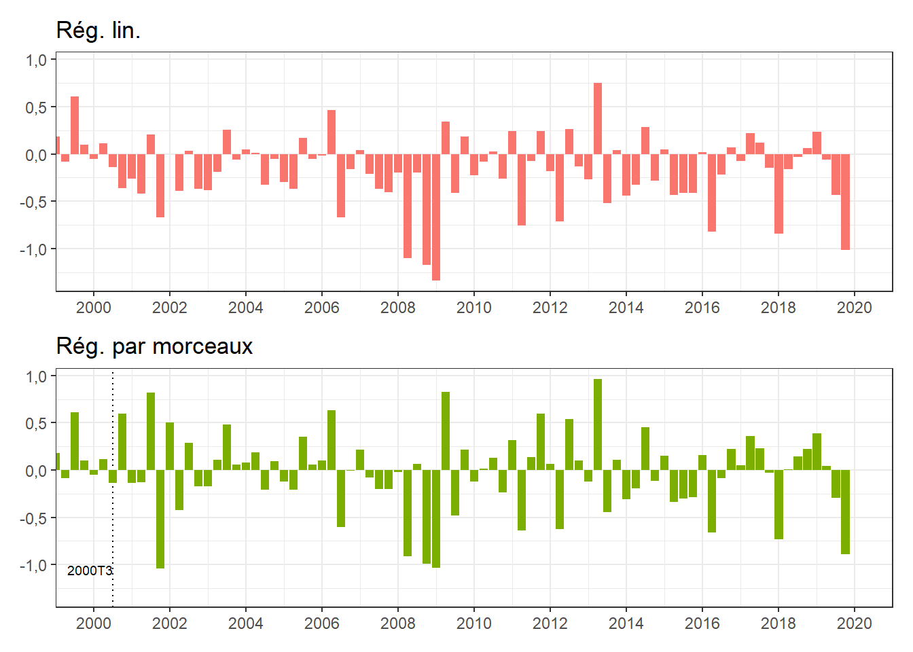
Source : Insee (PIB et climat des affaires France entre 1980 et 2019 téléchargés le 15 mars 2024), calculs de l’auteur.
Comme indiqué dans la section 2.1, l’inconvénient de cette méthode provient du choix de la date de rupture lorsque celle-ci n’est pas imposée par l’utilisateur. La figure 2 montre la date de la rupture détectée par la procédure de Bai et Perron en fonction de la date de fin d’estimation du modèle de régression linéaire : aucune rupture n’est détectée avant 2009 ou lorsque le modèle est estimé en utilisant des données jusqu’en 2012T3-2016T1. En fonction de la date de fin d’estimation, la rupture détectée automatiquement peut tout aussi bien être en 2000 qu’en 2001, 2004 ou 2006. Même s’il est possible que cela n’ait que très peu d’effet sur les prévisions estimées en fin de période, l’interprétation faite du modèle sera vraisemblablement différente !
Figure 2 - Date de rupture détectée par l’algorithme de Bai et Perron en fonction de la date de fin d’estimation du modèle.
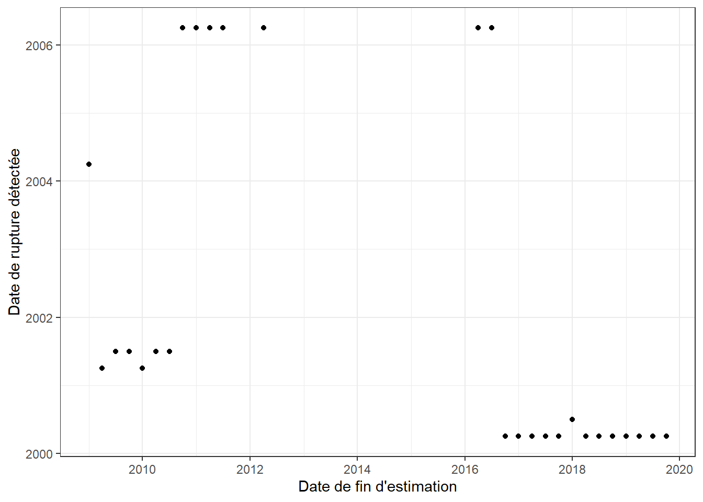
Source : Insee (PIB et climat des affaires France entre 1980 et 2019 téléchargés le 15 mars 2024), calculs de l’auteur.
3.2 De la régression mobile à la régression locale
La régression mobile est une des méthodes empiriques les plus simples pour savoir si les coefficients évoluent dans le temps. Celle-ci consiste à estimer des régressions sur des fenêtres glissantes et à observer la courbe des coefficients estimés. En reprenant notre exemple où les données commencent en 1980, avec une fenêtre fixe de 10 ans (par exemple), cela consiste à estimer une première régression entre 1980T1 et 1989T4, une deuxième entre 1980T2 et 1990T1… et une dernière entre 2010T1 et 2019T4. Sous R cela peut par exemple s’estimer en utilisant la fonction roll::roll_lm()(Foster 2020) :
La figure 3 montre les coefficients estimés par cette régression mobile. Seuls ceux estimés sur le climat des affaires en différence montrent une rupture nette. Elle s’observe à partir de 2005, lorsque plus de la moitié des points de la fenêtre (5 ans) sont estimés après la date de rupture détectée (2000T3).
Figure 3 - Coefficients estimés par régression linéaire, régression par morceaux et régression mobile.
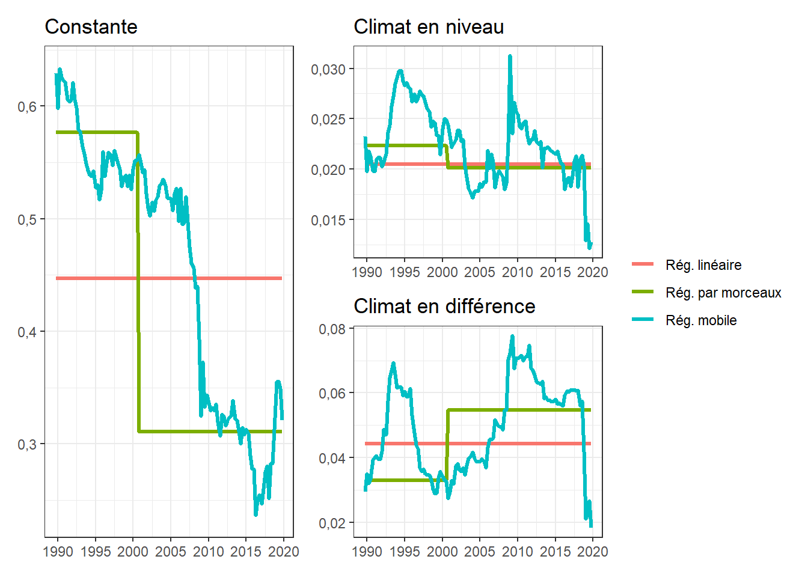
Lecture : la régression mobile est estimée sur une fenêtre de 10 ans. Les coefficients estimés en 2000T1 correspondent aux coefficients estimés entre 1980T2 et 2000T1. Note : les échelles sont différentes entre les différents graphiques. Source : Insee (PIB et climat des affaires France entre 1980 et 2019 téléchargés le 15 mars 2024), calculs de l’auteur.
La régression mobile a l’avantage d’être très simple mais repose sur plusieurs paramètres qui ont ici été fixés arbitrairement dont notamment :
La longueur de la fenêtre : elle doit être suffisamment large pour avoir des bonnes estimations mais suffisamment courte afin de permettre de prendre en compte les ruptures.
La date à laquelle les coefficients sont associés. Dans la fonction roll::roll_lm() ils sont associés à la dernière date de la fenêtre : les coefficients de la date \(t\) correspondent à ceux obtenus en utilisant les données jusqu’à la date \(t.\) Ils auraient également pu être associés à la première date de la fenêtre ou encore à son milieu (coefficients de la date \(t\) estimés en utilisant autant d’observations avant et après \(t\)). Dans tous les cas une stratégie doit être adoptée afin de gérer les observations manquantes (dans notre exemple il s’agit donc d’estimer les coefficients avant 1989).
La régression locale permet, grâce à une modélisation plus poussée, de donner des solutions à ce problème. Dans ce papier nous détaillons la modélisation utilisée dans la fonction tvReg::tvLM() développée par Casas et Fernandez-Casal (2019)6. On suppose ici que les coefficients \(\bf\alpha_t\) de l’équation 1 dépendent d’une variable aléatoire \(z_t\) : \(\bf\alpha_t=\alpha(z_t).\) Par défaut \(z_t=t/T\) avec \(T\) le nombre d’observations : les coefficients dépendent donc d’une mesure normalisée du temps. On suppose que la fonction \(\alpha\) est localement constante (\(\alpha(z_t)\simeq \alpha(z)\), option par défaut) ou localement linéaire (\(\alpha(z_t)\simeq \alpha(z)+\alpha'(z)(z_t-z)\)), c’est-à-dire que pour toute date \(t\) on a pour toute date \(i\) proche de \(t\) : \(\alpha(z_i)\simeq\alpha(z_t)\) ou \(\alpha(z_i)\simeq\alpha(z_t)+\alpha'(z_t)(z_i-z_t).\) Cette approximation locale est justifiée par le théorème de Taylor.
Pour chaque date \(t\), le coefficient \(\alpha_t=\alpha(z_t)\) est obtenu par moindres carrés pondérés. Lorsque \(\alpha\) est supposé localement constant il s’agit du système : \[
\hat{\bf\alpha_t}=\hat{\alpha}(z_t)=\underset{\bf\theta_0}\argmin\sum_{i=1}^T\left[y_i-{\bf X_i}\bf\theta_0 \right]^2K_{b_t}(z_i-z_t).
\] Lorsque \(\alpha\) est supposé localement linéaire il s’agit du système : \[
(\hat{\alpha}(z_t), \hat{\alpha}'(z_t))=\underset{\bf \theta_0,\bf \theta_1}\argmin\sum_{i=1}^T\left[y_i-{\bf X_i}\bf\theta_0 - (z_i-z_t){\bf X_i}\bf\theta_1\right]^2K_{b_t}(z_i-z_t).
\] Avec \(K_{b_t}(z_i-z_t)=\frac{1}{b_t}K\left(\frac{z_i-z_t}{b_t}\right)\) et \(K(\cdot)\) une fonction de noyau. La fonction \(K\) permet de pondérer les observations : pour l’estimation du coefficient à la date \(t\) on accorde généralement plus d’importance (i.e., un poids plus important) aux observations qui sont proches de \(t\) qu’à celles qui sont éloignées de \(t.\) C’est une fonction positive, paire et intégrable telle que \(\int_{-\infty}^{+\infty}K(u) \ud u=1.\) Trois noyaux sont disponibles dans la fonction tvReg::tvLM() :
Le cubique (triweight, utilisé par défaut) : \[
K(u)=\frac{35}{32}\left(
1-
\left\lvert
u
\right\lvert^2
\right)^3\1_{[-1,1]}(u).
\]
Le noyau d’Epanechnikov (ou parabolique) : \[
K(u)=\frac{3}{4}\left(
1-
\left\lvert
u
\right\lvert^2
\right)\1_{[-1,1]}(u).
\]
Le noyau Gaussien : \[
K(u)=\frac{1}{\sqrt{2\pi}}\exp\left(-\frac{1}{2}u^2\right).
\]
Le paramètre \(b_t\) permet de calibrer la largeur de la fenêtre (i.e., le nombre de points utilisés pour chaque estimation). Il est généralement supposé constant (\(b_t=b\)).
Dans notre exemple de prévision du PIB, \(T=160\) observations sont utilisées. Avec \(z_t=t/T\) et indexant chaque observation entre 1 et \(T,\) la régression mobile sur 15 ans où l’on affecte le coefficient de la date \(t\) au milieu de la fenêtre d’estimation est donc retrouvée en utilisant le noyau uniforme \(K(u)=\1_{[-1,1]}(x)\) avec \(b_t=b=\frac{30}{160}.\) En effet, dans ce cas \(K(z_t-z_i)\ne0\) si et seulement si \(|t-i|\leq30\) : on utilise donc 30 observations (soit \(7,5\) ans) de chaque côté de \(t\) pour estimer le coefficient à la date \(t.\)
Dans tvReg, le paramètre \(b\) est par défaut obtenu en minimisant une statistique de validation croisée dans l’intervalle \(\left[\frac{5}{T},20\right].\) Lorsque la valeur par défaut de \(b\) est plus grande que 1, toutes les observations sont utilisées pour l’estimation de chaque coefficient \(\bf\alpha_t.\) Plus \(b\) se rapproche de 1 plus on se rapproche du cas de la régression linéaire puisque dans ce cas les poids donnés par \(K\) tendent à être constants pour toutes les observations. En effet, dans ce cas, pour \(T=160,\)\(\frac{\max_u K(u)}{\min_u K(u)}\) est compris entre \(1,001\) et \(1,008\) pour les noyaux cubiques, paraboliques et gaussiens.
Reprenons notre exemple de prévision du PIB avec une détection automatique de la fenêtre.
La fenêtre estimée par défaut est de 0,75, c’est-à-dire que pour estimer le coefficient à la date \(t\) on utilise au plus 30 ans avant et après \(t\) : on utilise tous les points dans la majorité des cas. Cela explique le caractère très lisse des coefficients (figure 4). Bien qu’à n’importe quelle date entre 1990 et 2010, tous les points sont utilisés pour estimer le coefficient correspondant, les poids associés à ces points varient d’une date à l’autre, si bien que le coefficient estimé n’est pas constant sur cette période. Avec ce paramètre pour la fenêtre, les ruptures brutales sont donc difficiles à prendre en compte.
Figure 4 - Coefficients estimés par régression linéaire, régression par morceaux et régression locale (avec \(b=0,75\)).
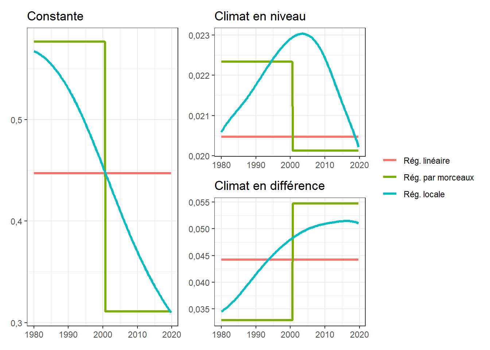
Note : les échelles sont différentes entre les différents graphiques. Source : Insee (PIB et climat des affaires France entre 1980 et 2019 téléchargés le 15 mars 2024), calculs de l’auteur.
Un des inconvénients de la méthode de sélection automatique de la fenêtre est que le critère utilisé (statistique de validation croisée) est peu discriminant (voir notamment Clive Loader 1999) : ce critère peut prendre des valeurs très proches pour différentes valeurs de la fenêtre alors que celle-ci a un impact fort sur l’interprétation du modèle ! Cela a également pour effet que la méthode est peu stable dans le temps (figure 5), ce qui augmente les sources de révisions des simulations hors échantillon, calculables en utilisant la fonction oos_prev() :
Figure 5 - Fenêtre \(b\) détectée automatiquement en fonction de la date de fin d’estimation du modèle.
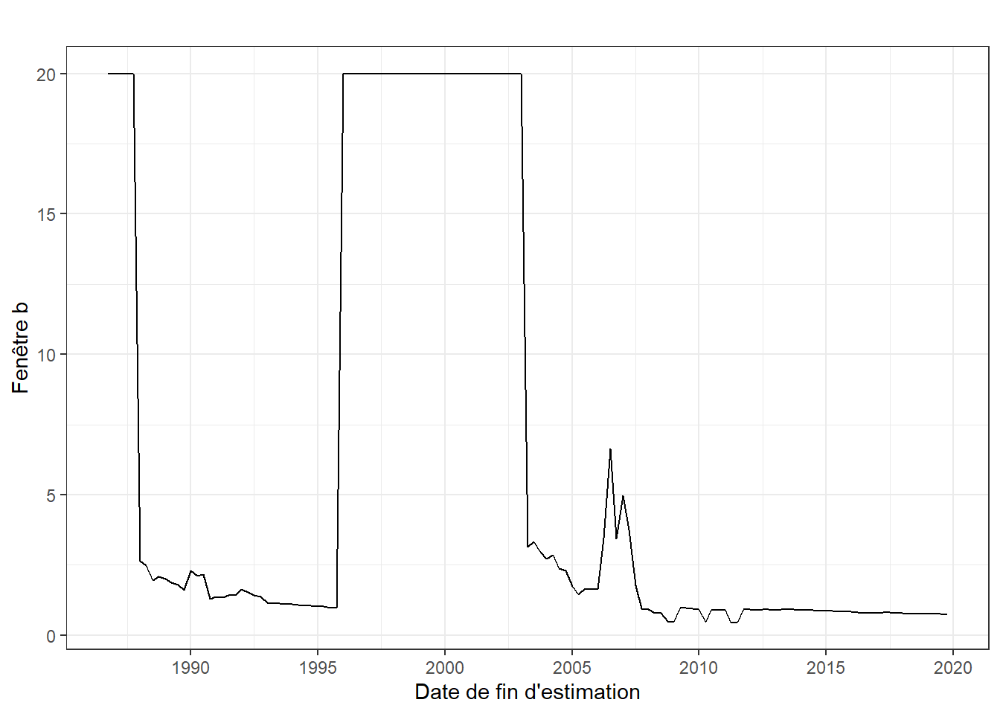
Source : Insee (PIB et climat des affaires France entre 1980 et 2019 téléchargés le 15 mars 2024), calculs de l’auteur.
L’estimation en temps réel revient à utiliser une fonction de noyau tronquée : plus de points dans le passé que dans le futur sont utilisés pour estimer les derniers coefficients. C’est donc également une source de révision au fur et à mesure que des nouveaux points seront connus. Même si des méthodes optimales existent pour minimiser les erreurs d’estimation des coefficients en temps réel (voir par exemple Feng et Schäfer 2021), cela devrait ici avoir peu d’impact car un modèle très simple est ici utilisé pour estimer les coefficients (approximation de la fonction \(\alpha\) par une constante).
Un autre inconvénient de ces méthodes est que tous les coefficients varient dans le temps alors que dans certains cas on peut supposer la relation constante.
3.3 Régression avec coefficients stochastiques (modélisation espace-état)
La modélisation espace-état est une méthodologie générale permettant de traiter un grand nombre de problèmes de séries temporelles. Dans cette approche, on suppose que tout modèle est déterminé par une série de vecteurs non observés \(\bf \alpha_1,\dots,\bf\alpha_T\) associés aux observations \(y_1,\dots,y_T\), la relation entre \(\alpha_t\) et \(y_t\) étant spécifiée par le modèle espace-état. Ces modèles sont largement décrits dans la littérature, notamment par Durbin et Koopman (2012). Dans cette étude, nous nous placerons dans un cadre simplifié des modèles linéaires gaussiens appliqués aux régressions linéaires. Les modèles sont déterminés par un ensemble de deux équations : \[
\begin{cases}
y_t={\bf X_t}\bf\alpha_t+\varepsilon_t,\quad&\varepsilon_t\sim\mathcal N(0,\sigma^2)\\
\bf\alpha_{t+1}=\bf\alpha_t+\bf\eta_t,\quad&\bf\eta_t\sim\mathcal N(\bf 0,\bf\Sigma)
\end{cases},\text{ avec }\eta_t\text{ et }\varepsilon_t\text{ indépendants.}
\] La première équation est l’équation d’observation (observation equation), la seconde l’équation d’état (state equation) et \(\bf\alpha_t\) le vecteur d’états (state vector).
Dans cette étude, la matrice de variance-covariance \(\bf\Sigma\) est supposée diagonale : la dynamique d’évolution des coefficients d’une variable est donc indépendante de la dynamique d’évolution des autres variables. Lorsque des contraintes entre les différents coefficients existent, des spécifications différentes de la matrice de variance-covariance \(\bf\Sigma\) peuvent être faites : c’est par exemple ce qui a été fait par Zhang et Poskitt (2006) pour estimer des coefficients jours ouvrables variant dans le temps. Chaque coefficient suivant une marche aléatoire, nous appelons cette méthode modèle de régression avec coefficients stochastiques.
On retrouve le cas de la régression linéaire lorsque \(\bf\Sigma=\bf 0\) puisque dans ce cas tous les \(\alpha_t\) sont égaux.
Ces modèles sont implémentés dans la fonction tvCoef::ssm_lm() qui prend en entrée un modèle de régression linéaire. Elle s’appuie sur le package rjd3sts(Palate 2023) qui permet d’implémenter très facilement les modèles espace-état sans devoir écrire explicitement le modèle. Par défaut les variances du vecteur d’états (\(\bf \Sigma\)) ne sont pas estimées et sont fixées à 0 : on retrouve donc les coefficients estimés par régression linéaire.
L’estimation des hyperparamètres (variances des bruits blancs \(\eta_t\) et \(\varepsilon_t\)) est faite par maximum de vraisemblance, et différentes méthodes existent pour initialiser les modèles (calculer \(\bf \alpha_1\)). Pour plus de détails voir par exemple Durbin et Koopman (2012). Le filtre de Kalman permet ensuite de calculer tous les coefficients. Parmi les paramètres calculés, les deux principaux sont :
Les états lissés (smoothed states) \(\E{\alpha_t|y_1,\dots,y_n}\) : il s’agit de l’estimation des états (\(\bf\alpha_t\)) en utilisant toute l’information disponible. Dans le cadre de la régression linéaire, les états lissés sont donc constants sur toutes les dates et correspondent aux coefficients estimés en utilisant l’ensemble des données disponibles :
Les états filtrés (filtered states) \(\E{\alpha_t|y_1,\dots,y_{t-1}}\) : il s’agit de l’estimation des états (\(\bf\alpha_t\)) en utilisant l’information disponible jusqu’à la date précédente. Dans le cadre de la régression linéaire, cela correspond aux coefficients estimés hors échantillon : la valeur des états filtrés en 2010T2 correspond aux coefficients estimés en utilisant les données jusqu’au 2010T1. Ils permettent donc d’avoir une estimation des prévisions hors échantillon du modèle.
round(window(ssm$filtering_states, start =c(2010, 2), end =c(2010, 2)), 6)
Lorsque les variances sont estimées, les états filtrés ne correspondent pas exactement à des estimations hors échantillon car les hyperparamètres restent fixés (variances \(\bf\Sigma\) et initialisation). Les estimations hors échantillon peuvent être calculées en utilisant la fonction tvCoef::ssm_lm_oos().
Pour faciliter l’estimation des variances \(\bf\Sigma,\) le modèle est souvent reparamétré : \[
\begin{cases}
y_t={\bf X_t}\bf\alpha_t+\varepsilon_t,\quad&\varepsilon_t\sim\mathcal N(0,\sigma^2)\\
\bf\alpha_{t+1}=\bf\alpha_t+\bf\eta_t,\quad&\bf\eta_t\sim\mathcal N(\bf 0,\sigma^2\bf Q)
\end{cases},\text{ avec }\eta_t\text{ et }\varepsilon_t\text{ indépendants.}
\] Les variances sont donc définies à un facteur multiplicatif près et une estimation en deux étapes est faite : la vraisemblance est dite concentrée. C’est ce qui est utilisé par défaut dans tvCoef::ssm_lm(). Dans notre exemple, l’erreur standard de la régression (residual standar error) peut se calculer de la façon suivante :
Afin d’estimer les variances associées à l’équation d’état, il faut utiliser les paramètres fixed_var_intercept = FALSE et fixed_var_trend = FALSE. Même si la valeur des variances (var_intercept et var_variables qui valent 0 par défaut) n’aura aucun effet sur les variances finales estimées, il est parfois nécessaire de modifier ces valeurs afin d’éviter une erreur dans l’optimisation. Sur notre modèle, l’optimisation conduit à garder fixe le coefficient associé au climat des affaires en niveau (variance nulle) mais considère que les autres variables varient dans le temps :
Remarque. Dans la version actuelle de tvCoef, les retards de la variable endogène (à prévoir) ne sont pas modélisés correctement. En effet, dans ce cas il faudrait utiliser une modélisation différente afin de prendre en compte la relation entre la variable endogène et les retards.
La figure 6 montre les coefficients estimés avec toutes les méthodes présentées dans ce papier. Pour toutes les méthodes, le coefficient du climat des affaires en niveau est stable dans le temps (coefficients estimés compris entre 0,020 et 0,023, même pour la régression locale les différences ne sont pas significatives). En revanche, les résultats de la régression avec coefficients stochastiques sont sensiblement différents pour le coefficient associé à la variation du climat des affaires, avec des périodes où le coefficient est plus faible que pour les autres méthodes (avant 1983, entre 1995 et 1999 et après 2011) et d’autres où il est plus élevé (notamment pendant la crise financière).
Figure 6 - Coefficients estimés par régression linéaire, régression par morceaux, régression locale (avec \(b=0,75\)) et régression avec coefficients stochastiques (modélisation espace-état).
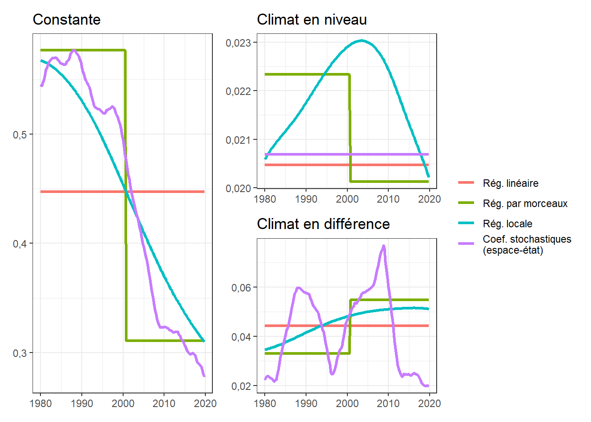
Note : les échelles sont différentes entre les différents graphiques. Source : Insee (PIB et climat des affaires France entre 1980 et 2019 téléchargés le 15 mars 2024), calculs de l’auteur.
La table 2 compare la qualité prédictive des différents modèles dans l’échantillon (en utilisant toutes les données pour estimer les paramètres des modèles) et hors échantillon (reproduction du processus de prévision en estimant de manière récursive les modèles jusqu’à la date \(t\) pour calculer les prévisions à la date \(t+1\)). C’est la régression avec coefficients stochastiques (modélisation espace-état) qui minimise les erreurs de prévision (dans et hors échantillon), suivie de la régression par morceaux. La régression locale a une erreur hors échantillon plus élevée notamment du fait des instabilités sur l’estimation de la fenêtre. Le test de Diebold-Mariano (voir notamment Diebold (2012)), implémenté dans la fonction forecast::dm.test()(Hyndman et Khandakar 2008), permet de tester si cette différence est significative. Dans et hors échantillon, la régression avec coefficients stochastiques a des erreurs de prévision significativement plus petites que la régression linéaire (p-valeurs de 0,00 et 0,05). Dans l’échantillon elles sont également significativement plus petites que celles de la régression par morceaux (p-valeur de 0,00) mais la différence n’est pas significative hors échantillon (p-valeur de 0,09). Sur les périodes récentes, du fait du coefficient sur le climat des affaires en différence, l’interprétation économique et les prévisions sont différentes.
oos_ssm <-ssm_lm_oos(reg_lin, fixed_var_intercept =FALSE, fixed_var_variables =FALSE,date =70)res_is <-ts.union(ts(residuals(reg_lin), end =c(2019,4), frequency =4),residuals(reg_morc),ts(residuals(reg_loc), end =c(2019,4), frequency =4),residuals(ssm)[, "smoothed"])res_oos <-ts.union( oos_lm$residuals, oos_reg_morc$residuals,ts(oos_reg_loc$residuals, end =c(2019,4), frequency =4), oos_ssm$oos_noise)res_oos <-window(res_oos, start =2003)# (H0) : Reg. coef stochastique meilleure que modèle linéaireforecast::dm.test(res_is[, 1], res_is[, 4], "greater")
Diebold-Mariano Test
data: res_is[, 1]res_is[, 4]
DM = 3.2675, Forecast horizon = 1, Loss function power = 2, p-value =
0.0006646
alternative hypothesis: greater
# (H0) : Reg. coef stochastique meilleure que régression par morceauxforecast::dm.test(res_is[, 2], res_is[, 4], "greater")
Diebold-Mariano Test
data: res_is[, 2]res_is[, 4]
DM = 3.0553, Forecast horizon = 1, Loss function power = 2, p-value =
0.001319
alternative hypothesis: greater
Diebold-Mariano Test
data: res_oos[, 1]res_oos[, 4]
DM = 1.6199, Forecast horizon = 1, Loss function power = 2, p-value =
0.05498
alternative hypothesis: greater
# (H0) : Reg. coef stochastique meilleure que régression par morceauxforecast::dm.test(res_oos[, 2], res_oos[, 4], "greater")
Diebold-Mariano Test
data: res_oos[, 2]res_oos[, 4]
DM = 1.3245, Forecast horizon = 1, Loss function power = 2, p-value =
0.09492
alternative hypothesis: greater
Table 2 - Erreurs quadratiques moyennes des erreurs de prévision entre les différentes méthodes.
Dans l’échantillon
Hors échantillon
Régression linéaire
0,39
0,43
Régression par morceaux
0,36
0,40
Régression locale
0,36
0,42
Régression avec coefficients stochastiques (espace-état)
0,34
0,39
Note : les prévisions dans l’échantillon sont calculées en estimant les modèles à partir des données disponibles entre 1980T1 et 2019T4. Les prévisions hors échantillon sont calculées à partir de 2003T1 : la première prévision (2003T1) correspond à celle que l’on aurait eu en estimant les modèles à partir des données disponibles jusqu’en 2002T4 (trimestre précédente). Source : Insee (PIB et climat des affaires France entre 1980 et 2019 téléchargés le 15 mars 2024), calculs de l’auteur.
3.4 Prise en compte de la période du COVID-19 et prévision
Dans les sections précédentes, les modèles ont été estimés jusqu’en 2019T4 dans le but de simplifier la présentation des modèles. Toutefois, si l’on veut effectuer de la prévision sur les périodes récentes, il est indispensable de prendre en compte la période du COVID-19. Cela se fait généralement en ajoutant, dans le modèle de prévision, des variables explicatives modélisant les chocs de cette période. La méthode la plus simple consiste à ajouter des indicatrices sur les trimestres concernés (ici l’année 2020 et le trimestre 2021T3)7 :
Time series regression with "ts" data:
Start = 1980(1), End = 2023(4)
Call:
dynlm(formula = growth_gdp ~ bc_fr_m1 + diff_bc_fr_m1 + ind2020T1 +
ind2020T2 + ind2020T3 + ind2020T4 + ind2021T3, data = window(data_covid,
start = 1980))
Residuals:
Min 1Q Median 3Q Max
-1.28405 -0.24352 0.02404 0.24979 0.95442
Coefficients:
Estimate Std. Error t value Pr(>|t|)
(Intercept) 0.434848 0.029527 14.727 < 2e-16 ***
bc_fr_m1 0.019944 0.003101 6.431 1.26e-09 ***
diff_bc_fr_m1 0.045651 0.007251 6.296 2.57e-09 ***
ind2020T1 -5.860936 0.387628 -15.120 < 2e-16 ***
ind2020T2 -9.849472 0.575971 -17.101 < 2e-16 ***
ind2020T3 15.297386 0.503486 30.383 < 2e-16 ***
ind2020T4 -0.839406 0.388384 -2.161 0.032090 *
ind2021T3 1.525800 0.405567 3.762 0.000232 ***
---
Signif. codes: 0 '***' 0.001 '**' 0.01 '*' 0.05 '.' 0.1 ' ' 1
Residual standard error: 0.386 on 168 degrees of freedom
(0 observation effacée parce que manquante)
Multiple R-squared: 0.9551, Adjusted R-squared: 0.9532
F-statistic: 510.1 on 7 and 168 DF, p-value: < 2.2e-16
Pour la construction des autres modèles, nous gardons certains paramètres estimés en utilisant les données avant la période du COVID-19, cette dernière pouvant biaiser les résultats. Ainsi :
Pour la régression par morceaux, la date de rupture retenue est toujours 2000T3 (contre 2017T2 en utilisant les données après 2020).
Pour la régression avec coefficients stochastiques (modélisation espace-état), les coefficients associés aux indicatrices sont fixés (variance nulle, sinon ils sont considérés comme évoluant dans le temps) et le coefficient du climat des affaires en niveau est toujours considéré comme fixe. Toutefois les variances des autres coefficients sont de nouveau estimées.
Les modèles sont donc estimés avec le code suivant :
reg_morc_covid <-piece_reg( reg_lin_covid, break_dates =2000.5,# Les indicatrices ne sont pas découpéesfixed_var =4:8)reg_loc_covid <- tvReg::tvLM(formula = growth_gdp ~ bc_fr_m1 + diff_bc_fr_m1 + ind2020T1 + ind2020T2 + ind2020T3 + ind2020T4 + ind2021T3,data =window(data_covid, start =1980),# On reprend l'ancienne fenêtrebw = reg_loc$bw )ssm_covid <-ssm_lm( reg_lin_covid, fixed_var_intercept =FALSE,# On fixe les coefficients des indicatrices# et le coefficient du climat des affaires en niveau # (sinon il varie dans le temps)fixed_var_variables =c(c(TRUE, FALSE), rep(TRUE, 5)),var_intercept =0.01,var_variables =c(0, 0.01, rep(0, 5)))coef_morc_covid <-coef(reg_morc_covid)coef_lin_covid <-ts(matrix(coef(reg_lin_covid), nrow =1), start =start(coef_morc_covid),end =end(coef_morc_covid),frequency =frequency(coef_morc_covid))colnames(coef_lin_covid) <-names(coef(reg_lin_covid))coef_reg_loc_covid <-ts(coef(reg_loc_covid), start =1980, frequency =4)coef_ssm_covid <-coef(ssm_covid)
La figure 7 montre les coefficients estimés en prenant en compte les données jusqu’au 2023T4. L’analyse est similaire à celle de la figure 6 sauf pour la régression avec coefficients stochastiques sur les dernières années : les variations du climat des affaires ayant un impact sur la prévision du PIB plus marqué après 2020, le coefficient associé est plus élevé après cette date mais aussi lors des années précédentes afin de lisser le passage à ce nouvel état de l’économie.
Figure 7 - Coefficients estimés (hors indicatrices) par régression linéaire, régression par morceaux, régression locale (avec \(b=0,75\)) et régression avec coefficients stochastiques (modélisation espace-état) en utilisant les données jusqu’en 2023T4.
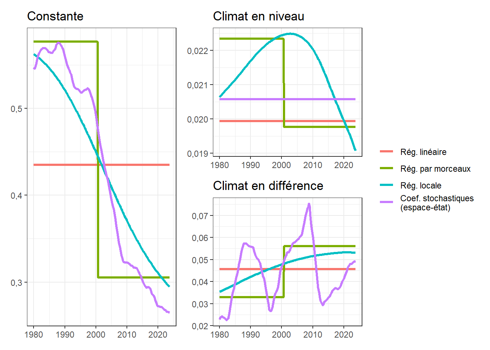
Note : les échelles sont différentes entre les différents graphiques. Source : Insee (PIB et climat des affaires France entre 1980 et 2023 téléchargés le 15 mars 2024), calculs de l’auteur.
Dans les données ici utilisées, le taux de croissance trimestriel du PIB est connu jusqu’au 2023T4 alors que les variables explicatives sont connues jusqu’au 2024T1 :
Il est donc possible d’effectuer une prévision sur le dernier trimestre et nous allons maintenant montrer comment procéder. Le plus simple est d’effectuer une somme pondérée des variables explicatives avec les coefficients estimés. Dans cet exemple, les variables explicatives sont directement calculées dans la base de données en entrée et sont donc faciles à extraire. Lorsque ce n’est pas le cas (par exemple lorsque des variables retardées ou en différence sont directement calculées dans la formule de la fonction dynlm()8) il faut alors recalculer toutes les variables explicatives. La fonction tvCoef::full_exogeneous_matrix() peut aider à effectuer cette tâche et ajoute également le régresseur associé à la constante (égal à 1) :
data_prev <-full_exogeneous_matrix(reg_lin_covid)# On extrait le dernier trimestre :der_period <-tail(data_prev, 1)der_period
# Transformation en numeric pour éviter des erreurs dues au format ts()der_period <-as.numeric(der_period)prev_reg_lin <-sum(coef(reg_lin_covid) * der_period)# Pour les autres méthodes on prend les derniers coefficients estimésprev_reg_morc <-sum(tail(coef(reg_morc_covid), 1) * der_period)prev_reg_loc <-sum(tail(coef(reg_loc_covid), 1) * der_period)prev_ssm <-sum(tail(coef(ssm_covid), 1) * der_period)# Ensemble des prévisions pour 2023T1 :round(c(prev_reg_lin, prev_reg_morc, prev_reg_loc, prev_ssm), 2)
[1] 0.43 0.30 0.29 0.26
Les prévisions entre les différentes méthodes sont proches car sur ce dernier trimestre le climat des affaires a peu évolué (différence de 0,4).
4 Comparaison générale
Dans cette section nous effectuons une comparaison plus détaillée des différentes méthodes utilisées. Pour cela, nous utilisons 28 modèles de prévisions des taux de croissance trimestriels de l’industrie manufacturière et de ses principales sous-branches (voir annexe 7 pour les graphiques de ces variables). Les modèles sont estimés entre 1990 et 2019 en utilisant des données issues des enquêtes de conjoncture de l’Insee et de la Banque de France, ainsi que l’Indice de Production Industrielle des branches étudiées. Toutes les séries utilisées sont disponibles sous dans la base de donnée tvCoef::manufacturing. Parmi ces 28 modèles, la procédure de Bai et Perron détecte au moins une rupture sur 14 modèles et le test de Hansen, utilisé avec un seuil de 5 %, conclut à la présence de coefficients mobiles dans 5 modèles (table 3). Cela permet donc également de comparer les résultats de la régression locale et de la régression avec coefficients stochastiques (modélisation espace-état) lorsque les coefficients ne sont pas considérés comme fixes par les tests étudiés. Dans la suite, nous considérerons qu’un modèle n’a pas de rupture lorsque le test de Bai et Perron n’en détecte aucune : dans ce cas, la régression par morceaux donne le même résultat que la régression linéaire.
Table 3 - Nombre de modèles étudiés par branche d’activité.
Total
Avec rupture
Bai et Perron
Hansen
Industrie manufacturière (C)
5
1
0
Agro–alimentaire (C1)
5
0
0
Biens d'équipement (C3)
6
4
2
Matériels de transport (C4)
6
4
0
Autres industries (C5)
6
5
3
Total
28
14
5
Lecture : dans la branche des biens d’équipement (C3), 6 modèles sont étudiés. Dans 4 de ces modèles la procédure de Bai et Perron conclut à la présence d’au moins une rupture et le test joint d’Hansen conclut que les coefficients sont mobiles dans 2 de ces modèles. Sources : Insee (comptes trimestriels, indices de production industrielle et enquêtes de conjoncture téléchargés le 15 mars 2024), Banque de France (enquêtes de conjoncture téléchargées le 15 mars 2024), calculs de l’auteur.
Pour l’estimation des modèles de régression par morceaux, nous limitons le nombre maximal de ruptures à 2. La dernière rupture est détectée en 2011T4, pour deux modèles de la branche des autres industries (C5). Les prévisions hors échantillon sont calculées après 2013 afin d’éviter les fortes erreurs autour des ruptures. Pour la régression locale et la régression avec coefficients stochastiques (modélisation espace-état), les modèles sont estimés avec les paramètres par défaut. Leur qualité prédictive pourrait même être améliorée avec une optimisation du modèle (par exemple en ne fixant pas les coefficients des indicatrices), au contraire de la régression linéaire ou par morceaux.
Pour comparer les prévisions, nous utilisons la racine carrée de l’erreur quadratique moyenne — Root-mean-square error (RMSE). Afin de comparer les résultats entre les différentes branches, nous normalisons les RMSE par celles calculées par la régression linéaire, c’est ce qui est montré dans la table 4. Dans l’ensemble ce sont les régressions avec coefficients stochastiques (modélisation espace-état) qui donnent les meilleurs résultats. C’est d’abord le cas pour les modèles où une rupture a été détectée. En effet dans l’échantillon, les performances sont proches entre les différentes méthodes (amélioration de la qualité prédictive moyenne d’environ 10 % par rapport à la régression linéaire). Et hors échantillon, les résultats sont également améliorés avec la régression avec coefficients stochastiques pour la majorité des modèles (en moyenne de 5 % et au maximum de 13 %) mais sont dégradés pour 3 des 14 modèles (d’au plus 7 %). Alors que pour la régression locale, les résultats sont identiques ou dégradés dans la majorité des cas (9 modèles sur 14) ; et pour la régression par morceaux, même si pour 7 séries les résultats sont améliorés, cette amélioration semble moins forte qu’avec la régression avec coefficients stochastiques (au plus 9 %).
C’est ensuite, étonnamment, aussi le cas lorsqu’aucune rupture n’est détectée, puisque les régression avec coefficients stochastiques permettent également d’améliorer les résultats : dans l’échantillon les erreurs de prévision sont réduites d’en moyenne 9 % et d’au plus 46 % (contre 2 % en moyenne et d’au plus 15 % pour la régression locale). En temps réel elles sont améliorées pour huit modèles (d’au plus 15 %) et ne sont que légèrement dégradées pour trois autres modèles. Pour la régression locale, la performance hors échantillon est toujours dégradée. Une partie de l’instabilité en temps réel provient du fait qu’aucune optimisation n’est faite dans la spécification des modèles. Toutefois ces résultats suggèrent que les tests ici présentés pour tester la constance des coefficients ne sont pas toujours pertinents. Ainsi, Zhang et Poskitt (2006) proposent une procédure de tests fondée sur la modélisation espace-état (en testant la significativité de la variance des coefficients estimés).
Table 4 - Racine carrée de l’erreur quadratique moyenne (RMSE) rapportée à celle des modèles régression linéaire.
Moyenne
Min
Max
Séries dont RMSE
< 1
= 1
> 1
Sans rupture - Dans l'échantillon
Rég. par morceaux
1,00
1,00
1,00
0
14
0
Rég. locale
0,98
0,85
1,00
5
9
0
Coef. stochastiques (espace-état)
0,91
0,54
1,00
10
4
0
Sans rupture - Hors échantillon
Rég. par morceaux
1,00
1,00
1,00
0
14
0
Rég. locale
1,03
1,00
1,09
0
4
10
Coef. stochastiques (espace-état)
0,98
0,85
1,02
8
3
3
Avec rupture - Dans l'échantillon
Rég. par morceaux
0,89
0,70
0,98
14
0
0
Rég. locale
0,90
0,74
0,99
14
0
0
Coef. stochastiques (espace-état)
0,88
0,68
0,98
14
0
0
Avec rupture - Hors échantillon
Rég. par morceaux
1,02
0,91
1,11
7
0
7
Rég. locale
1,04
0,96
1,19
5
1
8
Coef. stochastiques (espace-état)
0,95
0,87
1,07
10
1
3
Note : les modèles sans rupture sont ceux où aucune rupture n’est détectée par la procédure de Bai et Perron, la régression par morceaux coïncide alors avec la régression linéaire. Lecture : pour les prévisions hors échantillon la régression avec coefficients stochastiques (modélisation espace-état) permet, par rapport à la régression linéaire, de réduire la RMSE d’en moyenne de 5 % pour les modèles avec rupture et de 2 % pour les modèles sans rupture. Huit modèles sans rupture sont améliorés avec la régression avec coefficients stochastiques (avec une réduction maximale de la RMSE de 15 %) et les erreurs de prévision sont augmentées pour trois modèles (avec une hausse maximale de 2 %). Sources : Insee (comptes trimestriels, indices de production industrielle et enquêtes de conjoncture téléchargés le 15 mars 2024), Banque de France (enquêtes de conjoncture téléchargées le 15 mars 2024), calculs de l’auteur.
5 Conclusion
En conclusion, cette étude montre comment, à partir d’un modèle de régression linéaire, l’hypothèse de constance des coefficients peut être testée et comment relâcher cette hypothèse en implémentant des modèles de régression par morceaux, de régression mobile et de régression avec coefficients stochastiques (modélisation espace-état). Cette implémentation est facilitée grâce au package tvCoef (https://github.com/InseeFrLab/tvCoef) qui accompagne cette étude et tous les codes associés sont disponibles sous https://github.com/InseeFrLab/DT-tvcoef.
Lorsque les tests classiques indiquent une non-constance des coefficients, ces trois méthodes permettent de réduire les erreurs de prévision dans l’échantillon (lorsque les coefficients sont estimés sur l’ensemble des données). Toutefois, ces trois méthodes reposent sur des hypothèses qui peuvent conduire à de fortes instabilités, notamment si elles sont utilisées naïvement lors des exercices de prévision en temps réel (hors échantillon).
La régression par morceaux suppose la connaissance de dates de ruptures : même si des procédures existent pour leur détection automatique (Bai et Perron 2003), les instabilités autour de celles-ci font qu’il est préférable de s’appuyer sur un raisonnement économique. En effet, si rupture brutale il y a, elle doit pouvoir s’expliquer et le statisticien devrait pouvoir l’expliquer.
Le paramètre principal de la régression locale est la fenêtre, qui permet de jouer sur la sensibilité des estimations aux observations lointaines. Même s’il existe également des procédures de sélection automatique, leurs instabilités conduisent à des erreurs de prévision plus élevées que la régression linéaire lors des exercices de prévisions en temps réel.
Enfin, dans les régressions avec coefficients stochastiques (modélisation espace-état), des instabilités numériques d’optimisation peuvent conduire à une volatilité dans l’estimation des variances des coefficients (qui déterminent si le coefficient varie ou non dans le temps et à quelle vitesse). C’est toutefois la méthode qui donne les meilleurs résultats et qui permet dans la majorité des cas de réduire les erreurs de prévision par rapport à la régression linéaire, même lorsque les tests classiques indiquent une constance des coefficients !
Même si ces méthodes permettent, par rapport à la régression linéaire, d’améliorer la qualité des prévisions, elles n’ont pas vocation à remplacer les modèles existants mais plutôt à les compléter. En effet, même si dans la majorité des cas les méthodes étudiées permettent de réduire les erreurs de prévision, cela peut ne pas être le cas sur tous les trimestres. D’une part la combinaison de prévisions issues de différents modèles permet généralement d’obtenir une prévision finale plus précise (voir par exemple Wang et al. 2023 pour une revue de littérature) ; d’autre part, l’interprétation économique et les hypothèses sous-jacentes sont différentes entre chaque modèle : l’analyse faite de la prévision dépend donc également de la conjoncture récente.
Cette étude pourrait être étendue de plusieurs manières. Tout d’abord, les méthodes ici présentées pourraient être améliorées. Par exemple, pour la régression locale et la régression avec coefficients stochastiques, nous supposons que les paramètres évoluent à la même vitesse au cours de toute la période d’estimation (fenêtre fixe et variance fixée). Toutefois, autour des périodes de crises (comme le COVID-19), il pourrait être pertinent d’ajouter plus de flexibilité à l’évolution des coefficients (en réduisant la fenêtre ou en effectuant un choc sur la variance) : cela ajouterait plus de variabilité dans les estimations mais pourrait permettre de mieux prendre en compte les changements structurels.
Ensuite, d’autres méthodes d’estimations pourraient être utilisées pour modéliser l’évolution dans le temps des coefficients. Par exemple Azrak et Mélard (2022) modélise des variations déterministes des coefficients (plutôt que stochastiques comme pour les modèles espace-état).
Enfin, les modèles auraient également pu être comparés aux modèles à seuil et modèles à changement de régime markoviens (pour une revue bibliographique de ces modèles, voir par exemple Petropoulos et al. 2022) qui peuvent se voir comme des cas particuliers des méthodes étudiées. En effet, dans les modèles à seuil la rupture est brutale et dépend du niveau d’une variable exogène et dans les modèles à changement de régime markoviens, les coefficients dépendent d’une variable inobservée modélisant la position de l’économie dans le cycle : la rupture est donc brutale et dépend d’une variable externe (comme dans la régression locale). In fine, le choix entre toutes ces méthodes se fait surtout sur les hypothèses économiques que l’on souhaite modéliser.
Azrak, Rajae, et Guy Mélard. 2022. « Autoregressive Models with Time-Dependent Coefficients—A Comparison between Several Approaches ». Stats 5 (3): 784‑804. https://doi.org/10.3390/stats5030046.
Bai, Jushan, et Pierre Perron. 2003. « Computation and analysis of multiple structural change models ». Journal of applied econometrics 18 (1): 1‑22. https://doi.org/10.1002/jae.659.
Bardaji, José, Benoît Campagne, Marie-Baïanne Khder, Quentin Lafféter, Olivier simon, Claire Elezaar Anne-Sophie Dufernez, Pierre Leblanc, Emmanuelle Masson, et Harry Partouche. 2017. « Le modèle macroéconométrique Mésange : réestimation et nouveautés ». Document de travail de la Direction des Études et Synthèses Économiques, nᵒ G2017/04. https://www.insee.fr/fr/statistiques/2848300.
Barhoumi, Karim, V. Brunhes-Lesage, Olivier Darné, Laurent Ferrara, Bertrand Pluyaud, et B. Rouvreau. 2008. « OPTIM : un outil de prévision trimestrielle du PIB de la France ». Bulletin de la Banque de France, nᵒ 171: 31‑42. http://EconPapers.repec.org/RePEc:bfr:bullbf:2008:171:02.
Chow, Gregory C. 1960. « Tests of Equality Between Sets of Coefficients in Two Linear Regressions ». Econometrica 28 (3): 591‑605. http://www.jstor.org/stable/1910133.
Diebold, Francis X. 2012. « Comparing Predictive Accuracy, Twenty Years Later: A Personal Perspective on the Use and Abuse of Diebold-Mariano Tests ». Working Paper 18391. Working Paper Series. National Bureau of Economic Research. https://doi.org/10.3386/w18391.
Engle, Robert F, et Clive WJ Granger. 1987. « Co-integration and error correction: representation, estimation, and testing ». Econometrica: journal of the Econometric Society, 251‑76.
Eurostat. 2015. « ESS Guidelines on Seasonal Adjustment ». Eurostat Methodologies; Working Papers, European Commission. https://doi.org/10.2785/317290.
Feng, Yuanhua, et Bastian Schäfer. 2021. « Boundary modification in local polynomial regression ». Working Papers CIE 144. Paderborn University, CIE Center for International Economics. https://ideas.repec.org/p/pdn/ciepap/144.html.
Glotain, Morgane, et Alain Quartier-la-Tente. 2015. « De nouveaux indicateurs de climats des affaires sous-sectoriels pour améliorer le diagnostic conjoncturel ». Note de conjoncture, juin, 35‑56. https://www.insee.fr/fr/statistiques/fichier/2019067/062016_d2.pdf.
———. 1992b. « Tests for Parameter Instability in Regressions with I(1) Processes ». Journal of Business & Economic Statistics 10 (3): 321‑35. http://www.jstor.org/stable/1391545.
Hyndman, Rob J, et Yeasmin Khandakar. 2008. « Automatic time series forecasting: the forecast package for R ». Journal of Statistical Software 26 (3): 1‑22. https://doi.org/10.18637/jss.v027.i03.
Petropoulos, Fotios, Daniele Apiletti, Vassilios Assimakopoulos, Mohamed Zied Babai, Devon K. Barrow, Souhaib Ben Taieb, Christoph Bergmeir, et al. 2022. « Forecasting: theory and practice ». International Journal of Forecasting 38 (3): 705‑871. https://doi.org/10.1016/j.ijforecast.2021.11.001.
Pham, Hien, et Alain Quartier-la-Tente. 2018. « Désaisonnaliser les séries très longues par sous-période, gains et choix de la longueur de traitement - exemple des séries de l’IPI ». XIIIèmes Journées de Méthodologie Statistique de l’Insee. http://www.jms-insee.fr/2018/S05_2_ACTEv3_PHAM_JMS2018.pdf.
Wang, Xiaoqian, Rob J. Hyndman, Feng Li, et Yanfei Kang. 2023. « Forecast combinations: An over 50-year review ». International Journal of Forecasting 39 (4): 1518‑47. https://doi.org/10.1016/j.ijforecast.2022.11.005.
Zeileis, Achim, Christian Kleiber, Walter Krämer, et Kurt Hornik. 2003. « Testing and Dating of Structural Changes in Practice ». Computational Statistics & Data Analysis 44 (1–2): 109‑23. https://doi.org/10.1016/S0167-9473(03)00030-6.
Zhang, Xichuan (Mark), et Anna Poskitt. 2006. « An ARIMA model based approach to estimate evolving trading day effect ». Presented at the Joint Statistical Meeting, août.
6 Installation de tvCoef
Pour utiliser tvCoef, il faut il faut avoir la version 17 de Java SE (ou une version supérieure).
Pour savoir quelle version de Java est utilisée par R, utiliser le code suivant :
Si le résultat n’est pas sous la forme "17xxxx" c’est que vous n’avez pas Java 17 !
Si l’on a pas cette version d’installée et que l’on n’a pas les droits d’administrateur pour installer Java, une solution est d’installer une version portable de Java, par exemple installer une version portable à partir des liens suivants :
Pour installer une version portable de java, télécharger par exemple le fichier Windows 10 x64 Java Development Kit disponible sur https://jdk.java.net/java-se-ri/17, le dézipper et le mettre par exemple sous "D:/Programmes/jdk-17".
Pour configurer R avec une version portable de Java, trois solutions :
Avant tout chargement de package nécessitant Java (rJava…) (si vous avez lancé le code précédent, relancez donc R) :
# Si la version portable est installée sous D:/Programmes/jdk-17Sys.setenv(JAVA_HOME='D:/Programmes/jdk-17')
Pour éviter de faire cette manipulation à chaque fois que l’on relance R, deux solutions :
Modifier le .Renviron : depuis R lancer le code file.edit("~/.Renviron"), ajouter dans le fichier le chemin vers la version portable de Java comme précédemment (JAVA_HOME='D:/Programmes/jdk-17'), sauvegarder et relancer R.
Il reste maintenant à installer les packages :
# Nécessaire pour installer rjd3stsremotes::install_github("rjdverse/rjd3toolkit")# Pour installer rjd3sts (modèles espace-état)remotes::install_github("rjdverse/rjd3sts")remotes::install_github("InseeFrLab/tvCoef")
Si vous utilisez un ordinateur professionnel, si c’est nécessaire, pensez à configurer le proxy pour que ces commandes puissent fonctionner (voir https://www.book.utilitr.org/01_r_insee/fiche-personnaliser-r#le-fichier-.renviron). Pour cela vous pouvez utiliser curl::ie_get_proxy_for_url() pour récupérer l’adresse du proxy et ajouter deux variable http_proxy et https_proxy dans les variables d’environnement (comme précédemment).
7 Annexe graphiques
Figure 8 - Taux de croissance trimestriel du PIB français (variable tvCoef::gdp[, "growth_gdp"]).
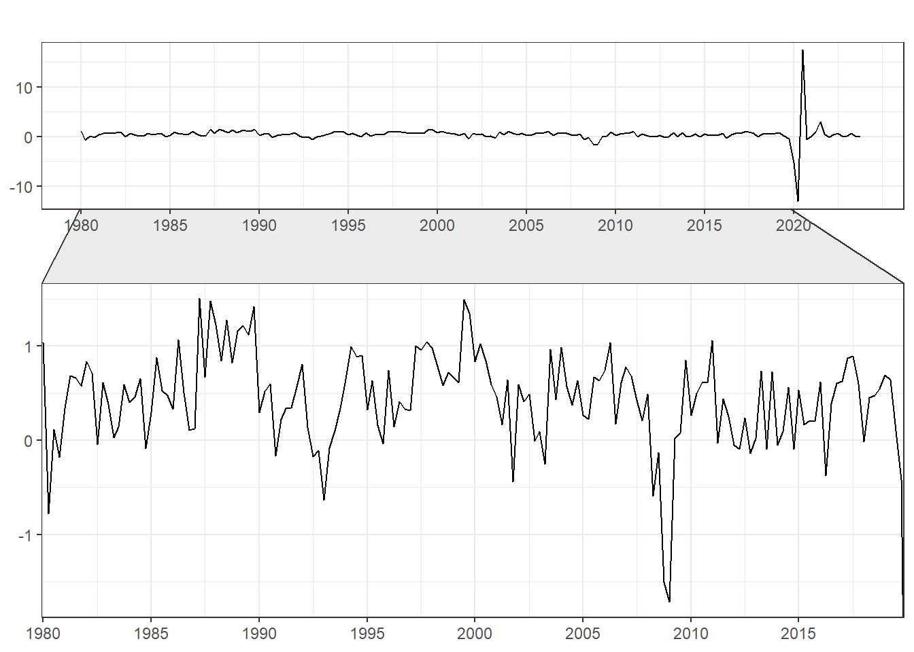
Lecture : le premier graphique représente la série observée jusqu’au 2023T4 et le second graphique correspond à un zoom sur la période pre-covid (avant 2020). Source : Insee (données téléchargées le 15 mars 2024).
Figure 9 - Climat des affaires France en niveau au premier mois de chaque trimestre (variable tvCoef::gdp[, "bc_fr_m1"]).
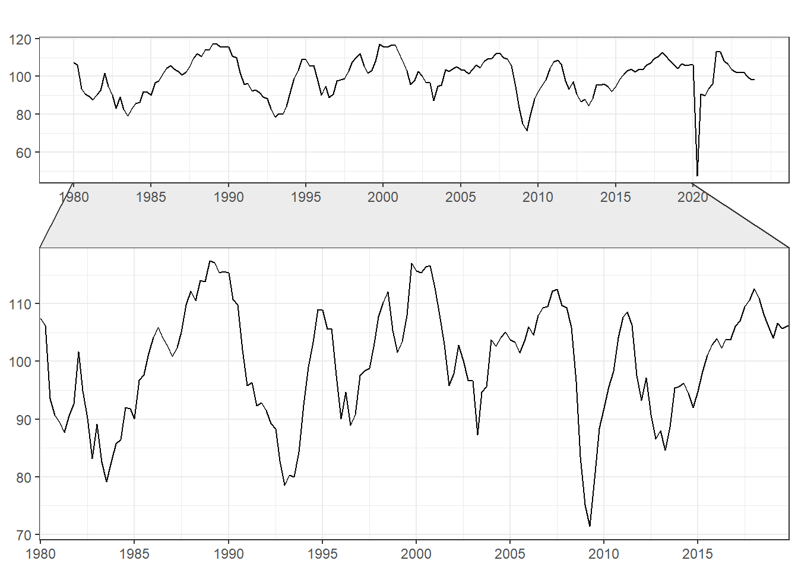
Lecture : le premier graphique représente la série observée jusqu’au 2023T4 et le second graphique correspond à un zoom sur la période pre-covid (avant 2020). Source : Insee (données téléchargées le 15 mars 2024).
Figure 10 - Différenciation trimestrielle du climat des affaires France au premier mois de chaque trimestre (variable tvCoef::gdp[, "diff_bc_fr_m1"]).
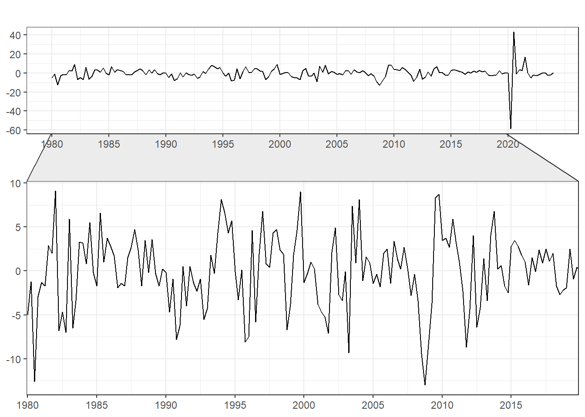
Lecture : le premier graphique représente la série observée jusqu’au 2023T4 et le second graphique correspond à un zoom sur la période pre-covid (avant 2020). Source : Insee (données téléchargées le 15 mars 2024).
Figure 11 - Taux de croissance trimestriel de la production manufacturière (variable tvCoef::manufacturing[, "manuf_prod"]).
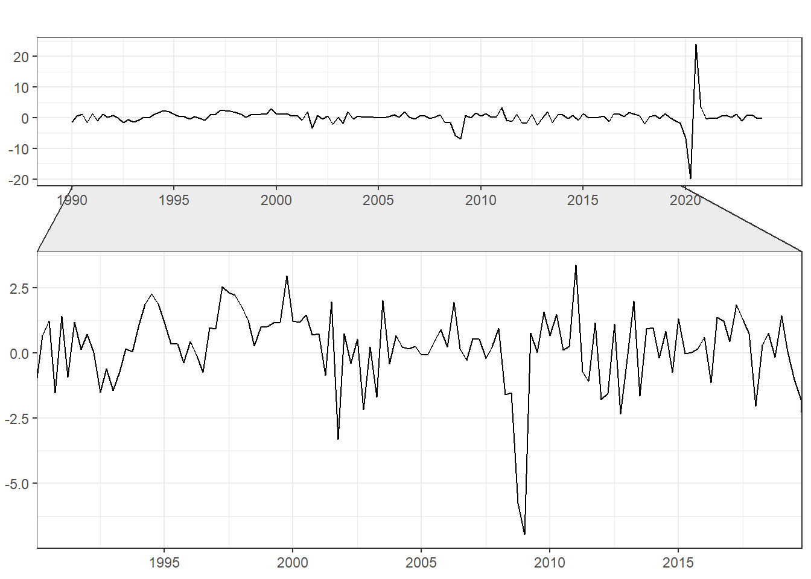
Lecture : le premier graphique représente la série observée jusqu’au 2023T4 et le second graphique correspond à un zoom sur la période pre-covid (avant 2020). Source : Insee (données téléchargées le 15 mars 2024).
Figure 12 - Taux de croissance trimestriel de la production dans la branche agro–alimentaire (C1) (variable tvCoef::manufacturing[, "prod_c1"]).
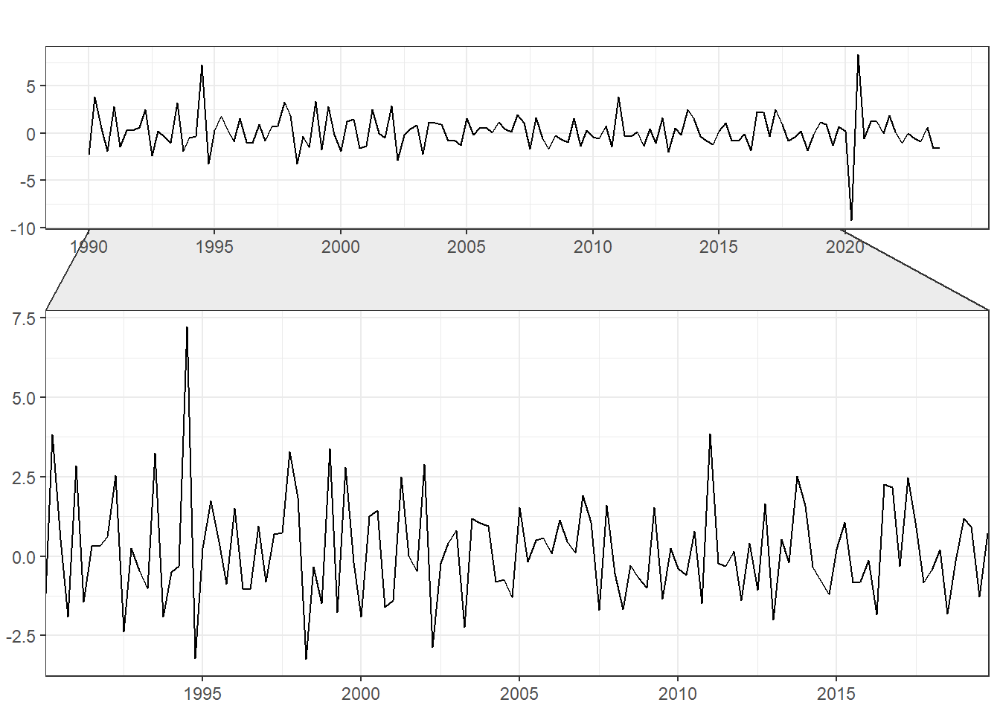
Lecture : le premier graphique représente la série observée jusqu’au 2023T4 et le second graphique correspond à un zoom sur la période pre-covid (avant 2020). Source : Insee (données téléchargées le 15 mars 2024).
Figure 13 - Taux de croissance trimestriel de la production dans la branche biens d’équipement (C3) (variable tvCoef::manufacturing[, "prod_c3"]).
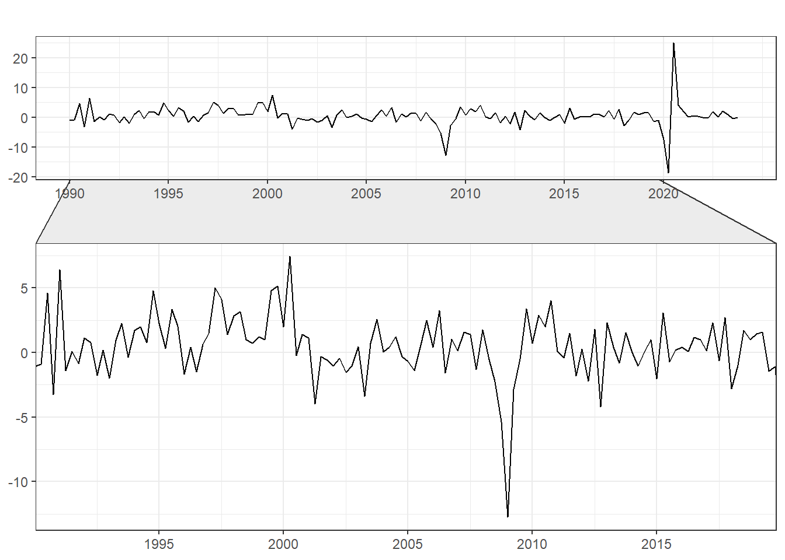
Lecture : le premier graphique représente la série observée jusqu’au 2023T4 et le second graphique correspond à un zoom sur la période pre-covid (avant 2020). Source : Insee (données téléchargées le 15 mars 2024).
Figure 14 - Taux de croissance trimestriel de la production dans la branche matériels de transport (C4) (variable tvCoef::manufacturing[, "prod_c4"]).
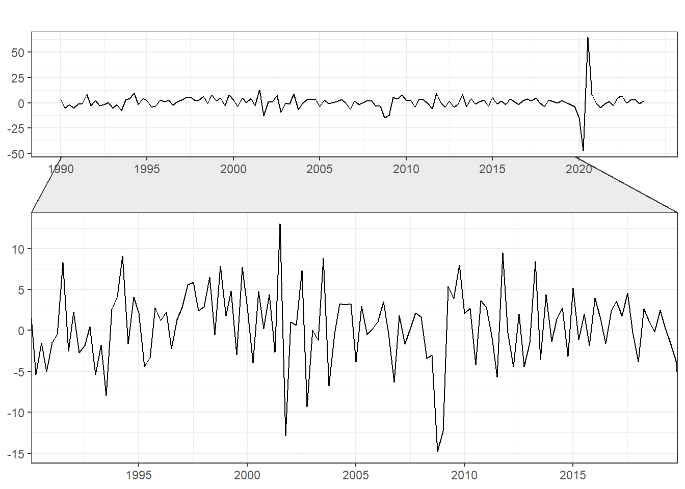
Lecture : le premier graphique représente la série observée jusqu’au 2023T4 et le second graphique correspond à un zoom sur la période pre-covid (avant 2020). Source : Insee (données téléchargées le 15 mars 2024).
Figure 15 - Taux de croissance trimestriel de la production dans la branche autres industries (C5) (variable tvCoef::manufacturing[, "prod_c5"]).
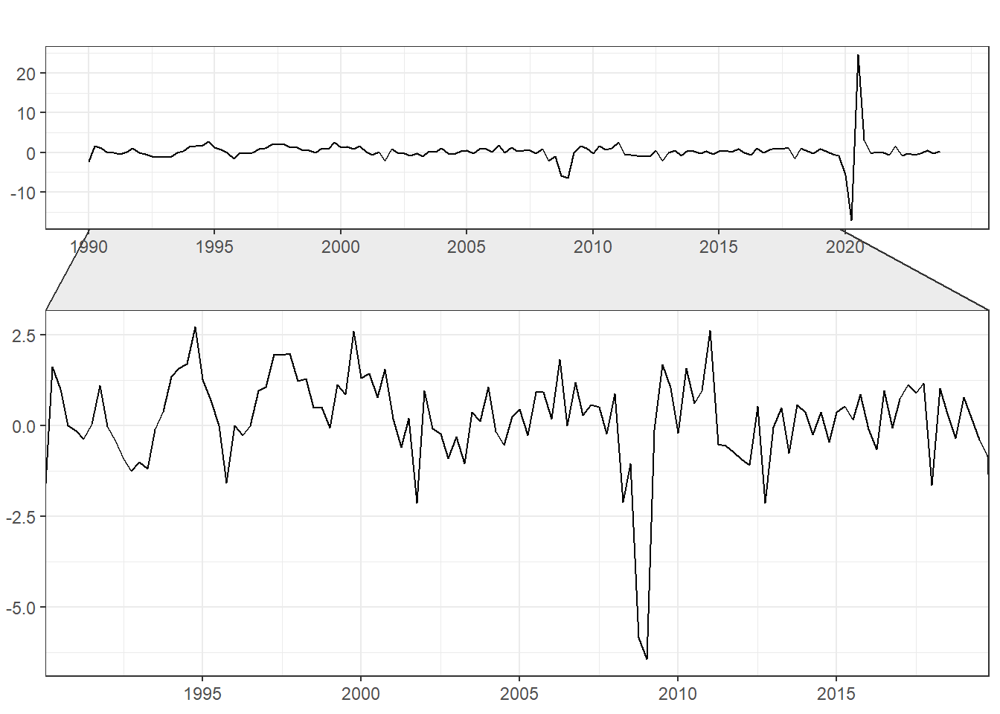
Lecture : le premier graphique représente la série observée jusqu’au 2023T4 et le second graphique correspond à un zoom sur la période pre-covid (avant 2020). Source : Insee (données téléchargées le 15 mars 2024).
Les données sont disponibles dans le package tvCoef ont été téléchargées le 15 mars 2024 et peuvent donc différer de celles actuellement disponibles.↩︎
Des variables sont faiblement dépendantes lorsque leur corrélation tend vers 0. Dans ce cas, le théorème central limite s’applique et les estimateurs sont asymptotiquement normaux (sans avoir besoin de supposer que les variables sont iid).↩︎
Dans ce cas, la matrice \(\bf V\) n’est pas inversible car la colonne associée à l’indicatrice sera proche de 0. Si la \(i\)e variable est une indicatrice à la date \(t_0\), \(f_{i,t}=x_{i,t}\hat\varepsilon_t\) sera égal à 0 pour \(t\) différent de \(t_0\) (car \(x_{i,t}=0\)) et \(f_{i,t_{0}}=x_{i,t_{0}}\hat\varepsilon_{t_0}=\hat\varepsilon_{t_0}= 0\) car l’ajout d’une indicatrice conduit généralement les résidus à être nuls sur la date associée.↩︎
D’autres packages sont disponibles pour effectuer une régression locale, dont par exemple locfit de Catherine Loader (2023). Toutefois, nous avons ici privilégié le package tvReg du fait de sa simplicité d’utilisation et parce qu’il implémente également une fonction tvReg::tvAR() qui permet de prendre en compte de manière optimale les retards de la variable endogène (cas non étudié dans cette étude).↩︎
D’autres spécifications pourraient être utilisées, comme par exemple l’ajout d’indicatrices sur l’ensemble des années 2020 et 2021 ou uniquement sur l’année 2020. Ajouter ou retirer d’autres indicatrices peut sensiblement changer les résultats des coefficients estimés sur la fin de la période, notamment du fait du faible recul temporel que l’on a après le COVID-19 : le choix dépend aussi des hypothèses économiques que l’on fait sur le modèle utilisé (quels sont les trimestres qui sont atypiques et ceux dont les évolutions relèvent de la conjoncture ?). Ici nous avons choisi de n’utiliser des indicatrices que pour l’année 2020 et le trimestre 2021T3 car les indicatrices des autres trimestres de 2021 ne sont pas significatives, que l’année 2020 est fortement heurtée par la crise du COVID-19 et que la forte croissance de 2021T3 peut s’expliquer par un contre-coup des mesures de confinement de 2021T2.↩︎
Ce qui aurait pu être le cas si le modèle avait été estimé en utilisant le paramètre formula = growth_gdp ~ bc_fr_m1 + diff(bc_fr_m1, 1) dans la fonction dynlm().↩︎
Citation
BibTeX
@article{quartier-la-tente2024,
author = {Quartier-la-Tente, Alain},
title = {Utilisation de modèles de régression à coefficients variant
dans le temps pour la prévision conjoncturelle},
journal = {Document de travail Insee},
number = {G2024/16},
date = {2024},
url = {https://github.com/InseeFrLab/DT-tvcoef},
langid = {fr}
}
Veuillez citer ce travail comme suit :
Quartier-la-Tente, Alain. 2024. “Utilisation de modèles de
régression à coefficients variant dans le temps pour la prévision
conjoncturelle.”Document de travail Insee. https://github.com/InseeFrLab/DT-tvcoef.
![]()